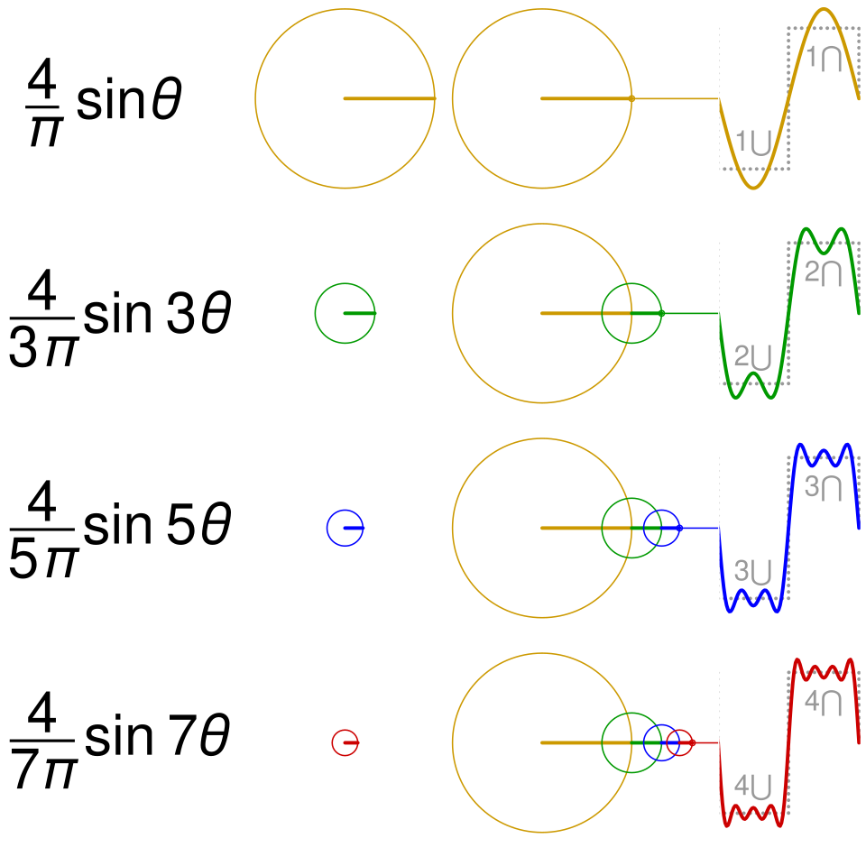
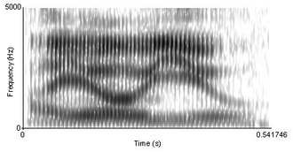
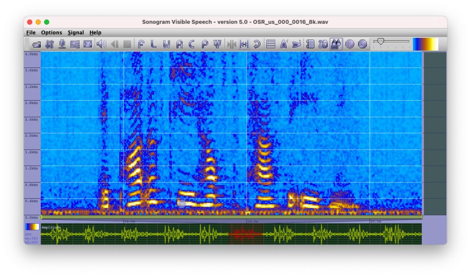
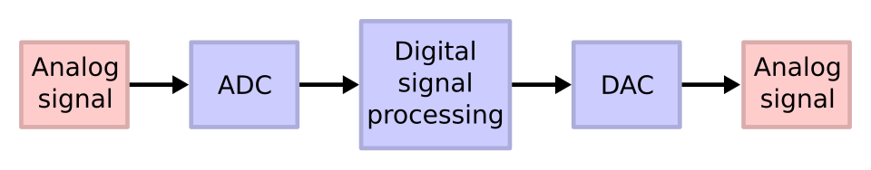
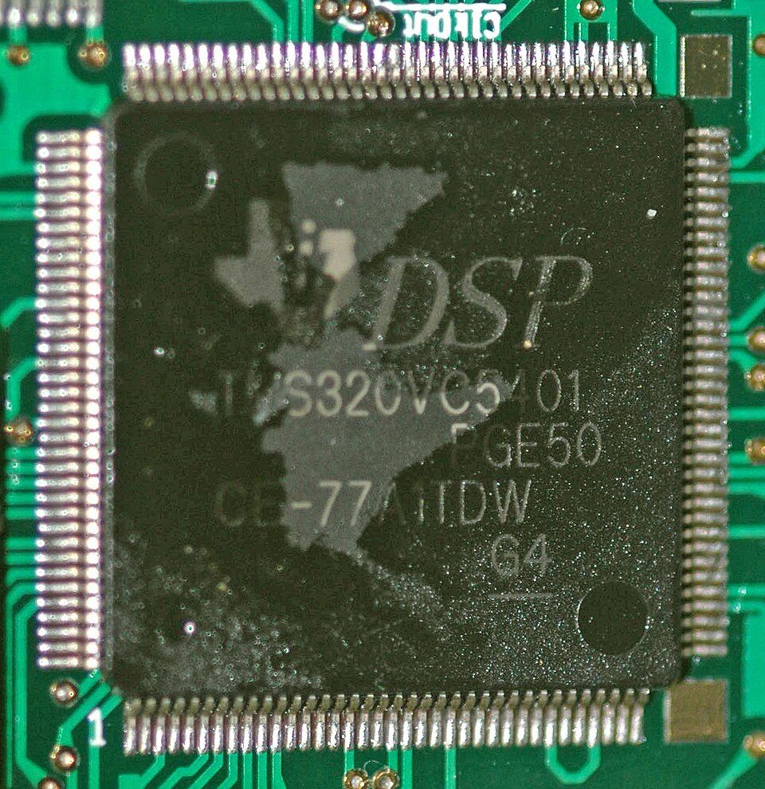

import numpy as np x = np.array([1, 3, -2, -4, 2], dtype=float) rms = np.sqrt(np.mean(x**2)) peak = np.max(np.abs(x)) print(round(rms, 2), peak, round(peak / rms, 2), round(20 * np.log10(peak / rms), 1))
2.61 4.0 1.53 3.7
Time domain, frequency domain and spectrogram; systems and software for sound recording; structure of a digital processing system, analogue vs digital processing, DSP applications, and time and frequency domain speech processing.
The simplest picture of a sound is a graph of how the pressure (or the microphone voltage) changes from moment to moment. This graph, the waveform, is the first thing you see when you open a recording in Audacity or Praat. Learning to read it tells you whether a sound is a tone or a noise, how loud it is, whether the voice is periodic, where the silences, vowels and consonants are, and whether a recording has been spoiled by clipping.
A time-domain representation plots amplitude (sound pressure, voltage or sample value) on the vertical axis against time on the horizontal axis. It shows the sound exactly as it happened, one instant after another.
Many clinical measurements are made directly on the waveform: duration of a vowel or a pause, voice onset time, the period of vocal fold vibration, peak and RMS level, and checks on recording quality. It is also the starting point for every frequency-domain method.
A microphone turns pressure changes into a voltage that follows the same pattern. An analogue-to-digital converter measures that voltage thousands of times per second. Software joins the measured points and draws them as a line, with zoom controls to show milliseconds or minutes.
Sound is a travelling disturbance in which air particles move back and forth and the local air pressure rises and falls a little above and below the steady atmospheric pressure (Unit 2, physics of sound). The small change in pressure is called the sound pressure. For conversational speech at 1 m it is typically only about 0.02 to 0.05 Pa, compared with an atmospheric pressure of about 101 000 Pa.
If we could watch a pressure gauge at one point in space and write down its reading every fraction of a millisecond, then plot the readings against time, we would get the waveform of the sound. In practice a microphone does the watching: its output voltage rises and falls in step with the sound pressure. The waveform on a screen is therefore a picture of voltage against time, which stands in for pressure against time. A few words used throughout this topic:
Figure 3.1a. The parts of a waveform, shown on a pure tone (sine wave). The period T is the time for one complete cycle; the frequency f = 1/T.
A waveform that repeats itself exactly is called periodic. The time taken for one repetition is the period, T, measured in seconds or milliseconds. The number of repetitions per second is the frequency, f, in hertz (Hz). They are reciprocals of each other:
A 1 kHz tone has a period of 1 ms; a 250 Hz tone has a period of 4 ms. For a voice, the repetition rate is the rate of vocal fold vibration, called the fundamental frequency (f0). Typical speaking f0 values are roughly 85 to 155 Hz for adult men, 165 to 255 Hz for adult women and 250 to 400 Hz for young children, so the period of the voice waveform is typically between about 2.5 and 12 ms.
A practical way to measure the period on screen is to count several complete cycles and divide the time they take by the number of cycles. Measuring over many cycles reduces the error from judging where one cycle begins.
Amplitude describes how large the pressure swings are. There are three common ways to state it, and it matters which one is meant:
The RMS value is the one that matters for loudness and for sound level meters: the sound pressure level in dB SPL is always calculated from the RMS pressure. For a pure tone, the RMS value is the peak value divided by √2:
This relation holds only for sine waves. Noise, speech and square waves each have a different ratio between peak and RMS, which is why the next idea is needed.
The crest factor is the ratio of the peak value to the RMS value. It tells you how "peaky" a signal is. It is often expressed in decibels.
| Signal | Crest factor (ratio) | Crest factor (dB) | Why it matters |
|---|---|---|---|
| Square wave | 1 | 0 | Every sample is at the peak, so peak and RMS are equal. |
| Sine wave (pure tone) | 1.414 | 3.0 | Audiometer tones: an RMS meter and a peak meter differ by 3 dB. |
| Random (Gaussian) noise | typically 3 to 5 | typically 10 to 14 | Rare large peaks; the value grows slowly with the length of the recording. |
| Running speech | typically 4 to 10 | typically 12 to 20 | Peaks are far above the average level, so recording levels and hearing-aid circuits need headroom. |
In recording software the amplitude axis is often labelled in dBFS. Full scale (sample value 1.0) is 0 dBFS, and every smaller value is negative:
A peak of 0.5 is 20 log10(0.5) = −6.0 dBFS, a peak of 0.25 is −12.0 dBFS, and 0.1 is −20 dBFS. dBFS is a digital scale only: it does not tell you the sound pressure in the room unless the system has been calibrated (see 3.4).
All sounds fall into two broad families according to their waveforms.
Real voices are only nearly periodic (quasi-periodic): each cycle is slightly different from the last. The small cycle-to-cycle variation in period is called jitter, and in amplitude shimmer. Larger irregularity, together with added noise from air leaking through the glottis, is heard as a hoarse or breathy voice. These measures are taken from the time-domain waveform, which is why recording quality (3.4) is so important in voice clinics.
Figure 3.1b. Typical waveforms. The complex tone and the vowel-like wave repeat exactly, like the pure tone, but each cycle has a more complicated shape. The noise has no repeating pattern.
When noise is measured in a clinic or a recording room, its behaviour over time matters as much as its level. A common classification, used in standards on noise measurement, is:
| Type | How the waveform and level behave | Example near a clinic |
|---|---|---|
| Steady | Level stays almost constant; a sound level meter reading barely moves. | Air-conditioner, ventilation fan, computer fan. |
| Fluctuating | Level rises and falls widely and irregularly. | Road traffic, a busy waiting area. |
| Intermittent | Noise appears for periods of several seconds or more, with quiet gaps in between. | A passing train or aircraft, a lift motor starting. |
| Impulsive (isolated bursts) | Short, separate bursts of energy, typically at least a fraction of a second apart. | Door slams, hammering, a dropped instrument tray. |
| Quasi-steady impulsive | Impulses repeated so rapidly (well under a second apart) that the noise sounds almost steady. | A drilling machine, an electric bell. |
Impulsive noises are especially damaging to recordings because their peaks can clip the recording chain even when the average level is low.
If you zoom out so that a whole word fills the screen, the individual cycles merge into a solid band. The outline of this band, the slow rise and fall of amplitude, is called the amplitude envelope. It changes over tens to hundreds of milliseconds, much more slowly than the waveform itself.
The fine, rapid oscillation inside the envelope is called the temporal fine structure. The distinction between envelope and fine structure will come up again in hearing aids and cochlear implants.
A speech waveform, viewed at the scale of a word or sentence, is made of three kinds of segment that can be told apart by eye with practice.
Figure 3.1c. Sketch of the waveform of "a sa pa". Vowels are large and periodic, the fricative /s/ is small and noise-like, and the stop /p/ shows a silent closure followed by a brief burst.
| Segment | What you see on the waveform | Speech sounds |
|---|---|---|
| Voiced | Repeating cycles, one per vocal fold vibration; relatively large amplitude; each cycle often looks like a sharp pulse followed by a decaying ripple. | Vowels, nasals /m n/, laterals and approximants /l r w j/, voiced parts of voiced consonants. |
| Unvoiced | Irregular, noise-like, usually smaller amplitude; many zero crossings per millisecond. | Voiceless fricatives /s ʃ f h/, aspiration after /p t k/. |
| Silence | Flat line near zero, only background noise. | Pauses between phrases, stop closures (the hold phase of /p t k b d g/). |
| Transient | A single sharp spike or very short burst of noise. | Release burst of a stop consonant; clicks. |
Two simple measurements separate these classes and are the basis of automatic voiced/unvoiced/silence detection (3.8 time-domain speech processing):
Durations are also read from the waveform: vowel duration, the length of pauses, the closure duration of stops, and voice onset time (VOT), the time from the release burst of a stop to the start of regular voicing. In English and many Indian languages, voiceless aspirated stops have long positive VOT (voicing starts well after the burst), while fully voiced stops show voicing before the release (negative VOT). Such measures are used in the assessment of motor speech disorders, apraxia, stuttering and the speech of children with hearing loss.
Audio software (Audacity, Praat, Adobe Audition and others) shows the waveform in a similar way. The main points to check when reading one:
Example 1. A pure tone from a signal generator has a peak voltage of 0.5 V. Find its RMS voltage and peak-to-peak voltage.
Example 2. On a zoomed-in waveform of a sustained /a/, five complete cycles take 40 ms. Find the period and the fundamental frequency.
Example 3. Five consecutive samples of a signal are 1, 3, −2, −4 and 2 (arbitrary units). Find the RMS value, the peak value and the crest factor.
Example 4. A recording has peaks at 0.25 of full scale. What is the peak level in dBFS?
import numpy as np x = np.array([1, 3, -2, -4, 2], dtype=float) rms = np.sqrt(np.mean(x**2)) peak = np.max(np.abs(x)) print(round(rms, 2), peak, round(peak / rms, 2), round(20 * np.log10(peak / rms), 1))
2.61 4.0 1.53 3.7
Choose a signal and a view length. Zoom out (500 to 1000 ms) to see the envelope, zoom in (5 to 20 ms) to see individual cycles. The red dashed lines mark ±RMS. Readouts are for the part on screen.
Things to notice: the pure tone gives a crest factor of about 1.41 (3 dB) wherever you look, the square wave exactly 1 (0 dB), the noise typically about 2.5 to 4 (8 to 12 dB, higher for longer stretches); the vowel is peakier than a sine. For "a sa pa", move the position slider across the utterance with a 50 ms view and watch the RMS fall in the /s/ and drop to near silence in the closure.
| Problem | Cause | What to check or do |
|---|---|---|
| Waveform shows no detail, only a solid band | Zoomed out too far | Zoom to 20 to 50 ms to see cycles. |
| Two sounds with different timbre look alike | Waveform shape is hard to compare by eye; the ear is also largely insensitive to phase | Use the spectrum (3.2) or spectrogram (3.3). |
| RMS depends on where you measure | Speech level changes over time | State the stretch used (whole vowel, whole sentence) and exclude pauses when reporting speech level. |
| Wrong f0 from counting cycles | Counted a secondary ripple as a cycle | Look for the largest repeating pattern; check against the spectrogram or Praat's pitch track. |
| Level quoted in dBFS taken as dB SPL | No calibration | dBFS is relative to the converter; record a calibration tone of known SPL if absolute levels are needed. |
Find the period of a 500 Hz tone and of a 4 kHz tone.
Model answer: T = 1/f. For 500 Hz, T = 1/500 = 0.002 s = 2 ms. For 4 kHz, T = 1/4000 = 0.00025 s = 0.25 ms.
The earphone of an audiometer is driven by a sine wave with an RMS voltage of 1 V. What are its peak and peak-to-peak voltages?
Model answer: Peak = RMS × √2 = 1.414 V. Peak to peak = 2 × 1.414 = 2.83 V.
Distinguish periodic and aperiodic sounds with a waveform sketch and two examples of each from speech and hearing practice.
Model answer: A periodic sound repeats its waveform exactly every period T and has a pitch related to f = 1/T; its spectrum consists of lines at the fundamental and its harmonics. Examples: audiometer pure tone, sustained vowel. An aperiodic sound has no repeating pattern and a continuous spectrum. Examples: narrowband masking noise, the fricative /s/. The sketch should show a sine wave or pulse train next to a random trace (as in Figure 3.1b).
A speech recording has an RMS level of −24 dBFS and its highest peak is at −6 dBFS. What is its crest factor in dB and as a ratio? Could the gain be raised by 10 dB safely?
Model answer: Crest factor = −6 − (−24) = 18 dB, a ratio of 10^(18/20) = 7.9. Raising the gain by 10 dB would move the peak to +4 dBFS, above full scale, so the peaks would clip. At most about 6 dB could be added, and less is wise to leave headroom for louder speech.
Describe how voiced, unvoiced and silent segments can be identified on a speech waveform. Name two simple measures used to separate them automatically.
Model answer: Voiced segments (vowels, nasals, approximants) show repeating cycles at the f0 rate with relatively large amplitude. Unvoiced segments (voiceless fricatives, aspiration) look irregular and noise-like, with smaller amplitude and many zero crossings. Silence (pauses, stop closures) is a flat trace containing only background noise. Short-time energy (high for voiced, lower for unvoiced, lowest for silence) and zero-crossing rate (low for voiced, high for unvoiced) are used together to classify each 10 to 30 ms frame.
Explain the time-domain representation of sound. Include the measurement of period, peak, RMS and crest factor, the amplitude envelope, and how a waveform display is read in a speech analysis program.
Model answer outline: (1) Definition: amplitude against time, obtained from a microphone and ADC; compression above and rarefaction below the zero line. (2) Period and frequency, f = 1/T, with an example (8 ms gives 125 Hz). (3) Peak, peak-to-peak and RMS with the formula; RMS = 0.707 peak for sine waves; RMS relates to energy and dB SPL. (4) Crest factor with typical values (sine 3 dB, speech 12 to 20 dB) and its importance for headroom. (5) Periodic, quasi-periodic and aperiodic signals, with jitter and shimmer. (6) Envelope versus fine structure. (7) Reading a display: axes, zoom, selection for durations, clipping, DC offset, noise floor. (8) Clinical uses: f0, VOT, durations, recording checks. Include Figure 3.1a.
The same sound can be described in a second way: by listing which frequencies it contains and how strong each one is. This list, drawn as a graph, is the spectrum. The cochlea itself performs a rough frequency analysis, so the spectrum is often closer to what we hear than the waveform, and it is the language of audiograms, hearing-aid fitting, noise measurement and acoustic phonetics.
A frequency-domain representation (spectrum) plots the amplitude or level of each frequency component on the vertical axis against frequency on the horizontal axis. It shows what a sound is made of, but not when things happen.
Hearing loss, masking, hearing-aid gain, room noise limits and vowel identity are all described by frequency. Two sounds that look confusingly similar as waveforms can be told apart at a glance from their spectra.
Any sound can be treated as a sum of sine waves (Fourier's idea). A spectrum analyser, a set of band-pass filters or a computer running the fast Fourier transform (FFT) measures how much of each sine wave is present.

In the early nineteenth century the French mathematician Joseph Fourier showed that any repeating waveform, however complicated its shape, can be built by adding together sine waves of suitable frequencies, amplitudes and starting points (phases). For a periodic waveform with period T, the sine waves needed have frequencies that are whole-number multiples of the repetition rate f0 = 1/T: f0, 2f0, 3f0 and so on. These components are called harmonics.
The process works in both directions:
Figure 3.2a. Fourier synthesis. Three sine waves (the 1st, 3rd and 5th harmonics of 100 Hz, with amplitudes 1, 1/3 and 1/5) add up to a waveform that already resembles a square wave.
For a periodic sound:
For the voice, the vocal folds produce a buzz rich in harmonics, whose amplitudes fall by typically about 12 dB per octave. The vocal tract then strengthens harmonics near its resonances, the formants, and weakens others. A vowel spectrum therefore shows harmonic lines spaced f0 apart, with an outline (the spectral envelope) whose peaks are the formants. Changing f0 moves the lines; changing the vowel reshapes the envelope. This source-filter picture is developed further in 3.3 and 3.9 frequency-domain speech processing.
Pitch and frequency are related but not the same. Frequency is a physical quantity; pitch is a perception. Pitch rises with frequency, but not in simple proportion: above a few hundred hertz, equal steps in pitch correspond roughly to equal frequency ratios, so going from 1 kHz to 2 kHz (one octave) sounds about as large a step as going from 2 kHz to 4 kHz. That is why audiograms use a logarithmic frequency axis with octave spacing.
Figure 3.2b. Waveforms and their spectra. A periodic sound has a line spectrum; an aperiodic sound has a continuous spectrum.
Fourier analysis gives two numbers for each frequency: an amplitude and a phase. Plotting amplitude against frequency gives the amplitude spectrum (or magnitude spectrum); plotting phase against frequency gives the phase spectrum. In speech and hearing work, the amplitude spectrum is used almost always, for a good reason: for steady sounds the ear is largely insensitive to the phases of the harmonics. Two waveforms that look very different but have the same amplitude spectrum usually sound almost the same. The demonstration below lets you verify this.
The vertical axis of an amplitude spectrum may be linear (pascals, volts or arbitrary units) or logarithmic in decibels. The decibel scale is used in almost all practical displays because it shows weak and strong components together and matches the way we perceive loudness changes. A component with half the amplitude of another is 20 log10(0.5) = −6 dB relative to it; one-tenth is −20 dB. The third harmonic of a square wave, at 1/3 of the fundamental's amplitude, is 20 log10(1/3) = −9.5 dB; the fifth is −14.0 dB.
A spectrum displayed with the level of each component in dB SPL, or of each frequency band in dB SPL, is sometimes called a level spectrum. The long-term average speech spectrum (LTASS) is an example: it shows that speech energy is greatest around 250 to 1000 Hz and falls off above that, which is important for hearing-aid prescription.
An FFT gives hundreds or thousands of narrow frequency bins, which is more detail than is needed for many practical jobs such as checking the noise in a test room. Instead, the frequency range is divided into a small number of standard bands, each a fixed ratio wide, and the level in each band is measured. This is constant percentage bandwidth analysis, done with octave-band or one-third-octave-band filters in a sound level meter or analyser.
Figure 3.2c. An illustrative octave-band spectrum of ventilation noise in a clinic room. Levels fall with frequency, as is typical of ventilation and traffic noise. The overall level of these seven bands is 50.5 dB SPL.
Band levels are combined on an energy basis, not by adding decibels. To find the overall level from band levels L1, L2, ... :
Worked example: three adjacent third-octave bands measure 70, 73 and 70 dB SPL. The octave band that contains them has L = 10 log10(10^7.0 + 10^7.3 + 10^7.0) = 76.0 dB SPL, not 213 dB.
A computer holds a sound as a list of samples. The mathematical tool that turns N samples into N/2 + 1 frequency components is the discrete Fourier transform (DFT). The fast Fourier transform (FFT) is a clever, very fast way of computing the DFT, especially when N is a power of two (256, 512, 1024, 2048 ...). It is the engine inside every software spectrum display, spectrogram, hearing-aid filter bank and many analysers.
Figure 3.2d. The steps a program such as Audacity (Analyze, Plot Spectrum) or Praat (To Spectrum) follows to show a spectrum.
Three numbers control what an FFT can show:
A longer frame gives finer frequency detail but averages over a longer time. This trade-off between time and frequency detail is the key to understanding spectrograms (3.3).
import numpy as np
fs, N = 16000, 1024
t = np.arange(N) / fs
x = sum(np.sin(2*np.pi*k*125*t) / k for k in (1, 3, 5))
X = np.abs(np.fft.rfft(x * np.hanning(N)))
f = np.fft.rfftfreq(N, 1/fs)
pk = [i for i in range(1, len(X) - 1)
if X[i] > X[i-1] and X[i] > X[i+1] and X[i] > 0.1 * X.max()]
print(fs / N, f[pk], np.round(20 * np.log10(X[pk] / X.max()), 1))
15.625 [125. 375. 625.] [ 0. -9.5 -14. ]
Increase the number of harmonics and watch the waveform approach a square, sawtooth or triangle shape. Switch to random phases: the waveform shape changes a lot, the amplitude spectrum does not change at all. The dashed blue line is the fundamental alone.
The RMS readout follows directly from the spectrum: the RMS of a sum of harmonics is the square root of the sum of the squares of their individual RMS values (each A/√2), whatever their phases.
| Problem | Cause | What to check or do |
|---|---|---|
| Spectrum shows no timing information | A spectrum averages over the analysed stretch | Analyse short segments or use a spectrogram (3.3). |
| Harmonics blur into one broad peak | Frame too short (bin spacing wider than f0) | Use a longer FFT (for example 2048 or 4096 at 44.1 kHz). |
| Spurious "skirts" around strong peaks | Spectral leakage, rectangular window | Choose a Hann or Hamming window. |
| Nothing above a certain frequency | Sampling rate too low, or MP3 compression removed high frequencies | Record at 44.1 or 48 kHz in WAV (3.4). |
| Band levels added arithmetically | Decibels are logarithmic | Convert to energies, add, convert back. |
A child's voice has f0 = 250 Hz. List the first five harmonics and state how many harmonics lie at or below 4 kHz.
Model answer: 250, 500, 750, 1000 and 1250 Hz. Harmonics at or below 4 kHz: 4000/250 = 16.
Calculate the lower and upper edges of the 2 kHz octave band and of the 2 kHz one-third-octave band.
Model answer: Octave: 2000/√2 = 1414 Hz to 2000 × √2 = 2828 Hz. Third octave: 2000/2^(1/6) = 1782 Hz to 2000 × 2^(1/6) = 2245 Hz.
Two octave bands of a noise measure 60 dB SPL each. What is their combined level? What if they were 60 and 70 dB?
Model answer: 10 log10(2 × 10^6) = 63.0 dB. For 60 and 70 dB: 10 log10(10^6 + 10^7) = 70.4 dB; the weaker band adds only 0.4 dB.
A recording at 44.1 kHz is analysed with a 2048-point FFT. Find the bin spacing, the frame duration and the highest frequency shown. Will the harmonics of a 100 Hz male voice be resolved?
Model answer: Δf = 44 100/2048 = 21.5 Hz; frame = 2048/44 100 = 46.4 ms; highest frequency = 22.05 kHz. Harmonics 100 Hz apart are about five bins apart, so yes, they are resolved (a window widens each peak over a few bins, but 100 Hz spacing is still clear).
With neat sketches, differentiate between line and continuous spectra. Give examples from audiology and speech.
Model answer: A line spectrum has energy only at discrete frequencies; it belongs to periodic sounds (pure tone: one line; vowel or other complex periodic tone: lines at f0, 2f0, 3f0 ...). A continuous spectrum has energy at all frequencies in a range; it belongs to aperiodic sounds (white or narrowband masking noise, /s/, a click). Sketches: vertical lines on a frequency axis versus a smooth curve (Figure 3.2b).
Explain the frequency-domain representation of sound, covering Fourier's principle, harmonics, amplitude spectrum, octave-band analysis and the FFT.
Model answer outline: (1) Spectrum as amplitude against frequency; complements the waveform. (2) Fourier: periodic signal = sum of sines at multiples of f0; synthesis and analysis; Figure 3.2a. (3) Fundamental, harmonics, overtones; square and sawtooth examples; voice harmonics shaped by formants. (4) Line versus continuous spectra. (5) Amplitude and phase spectra; dB scale; phase insensitivity of the ear. (6) Octave and third-octave bands: centre frequencies, edges, combining levels; use in room noise standards. (7) FFT: N samples to N/2+1 bins, Δf = fs/N, Nyquist, windowing; block diagram Figure 3.2d. (8) Clinical uses.
Speech changes every few tens of milliseconds, so neither a waveform nor a single spectrum tells the whole story. The spectrogram shows time, frequency and intensity together in one picture. It is the most widely used display in acoustic phonetics and in speech and voice clinics, and learning to read it lets you see vowels, consonants, voicing and pitch.
A spectrogram is a three-dimensional display drawn in two dimensions: time runs along the horizontal axis, frequency up the vertical axis, and the intensity at each time and frequency is shown by darkness (or colour).
It shows how the spectrum changes over time: formant movements, the noise of fricatives, the gap and burst of stops, voicing and pitch. These are exactly the features clinicians need to describe articulation, voice and fluency objectively.
The signal is cut into short, overlapping frames. Each frame is windowed and passed through an FFT to give a short-time spectrum. The spectra are turned into columns of grey or colour and placed side by side in time order.


The waveform (3.1) shows timing well but hides frequency content; the spectrum (3.2) shows frequency content but averages away the timing. A spectrogram is a compromise that shows both: it is a sequence of short-time spectra. The idea became practical in the 1940s, when engineers at Bell Telephone Laboratories built the sound spectrograph and published the book "Visible Speech", hoping that deaf people could learn to read speech from the pictures. That hope was not fully realised, but the spectrograph became the basic tool of speech science. Early machines used an analogue filter swept slowly across the frequency range and burned the pattern onto special paper; today software such as Praat, Audacity, Adobe Audition and clinical speech workstations compute spectrograms instantly with the FFT.
Terms used in this topic:
Figure 3.3a. Making a spectrogram. The sketch at the lower right is a coarse spectrogram of a vowel (formant bands), a fricative (high-frequency noise), a gap and a second vowel.
The single most important setting is the window length, because it controls a trade-off that cannot be avoided: a short window gives sharp timing but blurred frequency; a long window gives sharp frequency but blurred timing. As a rule of thumb the analysis bandwidth is inversely proportional to the window duration.
Worked example: a man speaks with f0 = 120 Hz, so his harmonics are 120 Hz apart and his glottal pulses are 1/120 = 8.3 ms apart.
Figure 3.3b. Schematic wideband spectrogram of "a sa pa". Formants are horizontal dark bars, the fricative is a tall patch of noise, the stop is a blank gap followed by a vertical burst.
Vowels appear as a series of dark horizontal bands, the formants, numbered F1, F2, F3 from the bottom. Formants are the resonances of the vocal tract; their frequencies depend on tongue position and lip rounding:
| Vowel | F1 (typical adult male) | F2 (typical adult male) | Pattern on the spectrogram |
|---|---|---|---|
| /i/ as in "see" | about 270 Hz | about 2300 Hz | F1 very low, F2 very high: wide gap between them. |
| /a/ as in "father" | about 730 Hz | about 1100 Hz | F1 high and F2 low: the two bands close together in the middle. |
| /u/ as in "who" | about 300 Hz | about 870 Hz | F1 and F2 both low. |
Values are classic averages for American English adult men; women's and children's formants are higher (shorter vocal tracts), and values differ between languages and speakers. Diphthongs and consonant-vowel transitions show formants gliding from one position to another.
On a narrowband spectrogram, voiced speech shows parallel horizontal lines, the harmonics, spaced f0 apart. When the pitch rises, all the lines rise together and spread apart; the tenth harmonic moves ten times as far as the first, so pitch changes are easiest to see on the higher harmonics. On a wideband spectrogram, the voicing shows as vertical striations whose spacing is the glottal period.
Fricatives are produced by turbulent air through a narrow constriction and appear as patches of random, fuzzy noise, with no formant bars or striations if they are voiceless:
A stop has a sequence of events that is very clear on a wideband spectrogram:
Voice onset time (3.1) is measured from the burst to the first vertical striation of voicing.
Nasals (/m n ŋ/) show a strong low-frequency band (the nasal murmur, typically around 250 to 300 Hz) with weaker upper formants, and abrupt changes at their boundaries with vowels. Liquids and glides (/l r w j/) look vowel-like with smoothly moving formants; /r/ in many English accents shows a characteristic very low F3.
Choose a test signal and a window length. With 3 to 5 ms (wideband) the vowels show formant bands and vertical striations; with 30 to 50 ms (narrowband) the separate harmonics appear. The colour map shows strong energy as bright yellow and weak energy as dark purple.
Things to notice: in the vowel sequence the F1 and F2 bands move from close together (/a/) to far apart (/i/) to both low (/u/). With the chirp, a short window makes the rising line thick (poor frequency resolution) and a long window makes it thin; the chirp never shows harmonics because it is a pure tone. In "a sa pa", the /s/ noise sits above about 4 kHz.
| Problem | Cause | What to check or do |
|---|---|---|
| Formants hard to see, many horizontal lines instead | Narrowband window, or high-pitched voice | Use a 3 to 5 ms window; overlay formant tracks with care in children. |
| /s/ appears cut off at the top | View range too low or sampling rate too low | Set view to 8 to 10 kHz; record at 44.1 kHz or more. |
| Whole picture grey or dark | Dynamic range too large, or high background noise | Reduce the dynamic range; improve the recording environment (3.4). |
| Horizontal line across the whole recording | Mains hum (50 Hz and harmonics) or fan whine | Check earthing and cables, move away from noise sources. |
| Blank above a sharp cut-off | MP3 or telephone-band recording | Use WAV at 44.1 or 48 kHz for analysis. |
| Automatic formant tracks jump between formants | Tracking algorithm settings not suited to the speaker | Adjust the maximum formant setting (typically about 5000 Hz for men, 5500 Hz for women, higher for children) and check visually. |
What do the three dimensions of a spectrogram represent?
Model answer: Horizontal axis: time. Vertical axis: frequency. Darkness or colour: relative intensity (level in dB) at that time and frequency.
Using B ≈ 1.44/T for a Hann window, find the analysis bandwidth for 4 ms and 40 ms windows. For a woman with f0 = 220 Hz, which window resolves her harmonics?
Model answer: 4 ms: 1.44/0.004 = 360 Hz. 40 ms: 1.44/0.040 = 36 Hz. The harmonics are 220 Hz apart, so the 40 ms window (36 Hz) resolves them clearly; with 4 ms (360 Hz) they merge into formant bands.
Compare wideband and narrowband spectrograms and state one clinical use of each.
Model answer: Wideband: short window (about 3 to 5 ms), bandwidth about 300 Hz, good time resolution, shows formants as bands and glottal pulses as vertical striations; used for formant, VOT and duration measurement in articulation and motor speech assessment. Narrowband: long window (about 20 to 50 ms), bandwidth about 45 Hz, good frequency resolution, shows individual harmonics; used for intonation, f0 contours and voice quality (noise between harmonics, subharmonics).
How would you recognise a vowel, a voiceless fricative and a voiceless stop on a wideband spectrogram?
Model answer: Vowel: dark horizontal formant bands with vertical striations, relatively long and intense. Voiceless fricative: a patch of random noise without striations or formant bars, its frequency range depending on the fricative (/s/ above about 4 kHz, /ʃ/ from about 2 to 3 kHz). Voiceless stop: a blank gap (closure), a thin vertical burst across frequencies, often aspiration noise, then the formant transitions of the following vowel.
Draw a block diagram showing how a digital spectrogram is produced and explain each step. Discuss the choice of window length.
Model answer outline: Blocks as in Figure 3.3a: digitised signal, framing (with overlap, hop of a few ms), windowing (Hann or Hamming), FFT of each frame, magnitude to dB, mapping to grey or colour with a chosen dynamic range, stacking columns in time order. Window length sets the time/frequency trade-off: B ≈ 1.44/T for Hann. Short windows (3 to 5 ms) give wideband spectrograms with formants and striations; long windows (20 to 50 ms) give narrowband spectrograms with harmonics. Worked example with f0 = 120 Hz: 5 ms gives 288 Hz (formants), 30 ms gives 48 Hz (harmonics).
Describe four uses of the spectrogram in speech-language pathology.
Model answer: (1) Articulation analysis, e.g. showing a distorted /s/ whose noise lies too low. (2) Motor speech and apraxia: measuring VOT, durations and formant transitions. (3) Voice: narrowband display of harmonic regularity, noise and voice breaks; grading of hoarseness. (4) Visual biofeedback in therapy, e.g. for children with hearing loss learning /s/ or vowel contrasts. Fluency analysis and documenting change over therapy are also valid.
Every acoustic analysis is only as good as the recording it starts from. This topic follows the sound from the speaker's mouth through the microphone, preamplifier, converter and computer to a saved file, and explains the choices that decide quality: microphone placement, gain, sampling rate, bit depth, file format and the room. It ends with a step-by-step procedure for recording a clinical speech sample.
A recording system is the chain of equipment and software that captures sound and stores it as a digital file: microphone, preamplifier, analogue-to-digital converter (usually inside an audio interface), computer, recording software and monitoring headphones.
Speech and voice samples are recorded for assessment, acoustic analysis, therapy feedback, research and records of progress. Noise, clipping, the wrong format or a changing microphone distance can make measurements such as f0, jitter, formants or intensity meaningless.
The microphone converts pressure to a small voltage; the preamplifier raises it to a level the converter can handle; the ADC samples and quantises it; software stores the samples in a file and displays level meters so the operator can set the gain correctly.

Figure 3.4a. Block diagram of a speech recording chain. The operator watches the level meter and listens on closed headphones while recording.
| Block | What it does | What can go wrong |
|---|---|---|
| Microphone | Converts sound pressure to a voltage of a few millivolts (Unit 2, transducers). Condenser and electret types are common for speech; dynamic types are robust and need no power. | Wrong polar pattern, poor frequency response, handling noise, breath pops, varying distance. |
| Preamplifier | Amplifies the weak microphone signal by typically 20 to 60 dB to line level; the gain knob sets the recording level. | Too little gain (noisy, low level) or too much (clipping); noisy cheap preamplifiers. |
| Audio interface / ADC | Samples the voltage at the sampling rate and quantises each sample to the chosen bit depth (Unit 1, analogue to digital conversion). Includes an anti-aliasing filter, phantom power, level LEDs and a headphone output. | Clipping at 0 dBFS; hum from earth loops; driver or sample-rate mismatches. |
| Computer and software | Receives samples, shows waveform and meters, saves the file, and later edits and analyses it. | Automatic "enhancements" (gain control, noise suppression), dropouts, wrong format settings. |
| Monitoring | Closed-back headphones let the operator hear noise, clicks and distortion while recording; the level meter shows peaks. | Open speakers in the same room cause feedback and are recorded again. |
| Storage and backup | Keeps the files safely with clear names and patient details kept confidential. | Lost or overwritten files; unencrypted patient data. |
The internal sound card and built-in microphone of a laptop form a complete but low-quality chain: the microphone is far from the mouth, picks up fan and keyboard noise, and the operating system may apply automatic gain and noise suppression. A USB microphone combines microphone, preamplifier and ADC in one unit and is a reasonable budget choice. For clinical acoustic analysis, a good condenser or headset microphone with an external audio interface is preferred.
Figure 3.4b. Microphone distance. Each halving of distance raises the speech level by about 6 dB while the room noise stays the same, so the signal-to-noise ratio improves.
Gain staging means setting the gain of each stage so that the signal is well above the noise of the system but never reaches the maximum the next stage can handle. In a simple speech recording, the key control is the preamplifier gain on the interface (or the input level in the software for a USB microphone).
Figure 3.4c. Where signals should sit on the dBFS scale. The gap between speech level and noise floor is the signal-to-noise ratio (SNR).
A commonly quoted guideline for acoustic voice analysis is an SNR of at least 30 dB, and preferably more; measures of noise in the voice (such as harmonics-to-noise ratio) are the most affected by a poor SNR.
Adjust the preamplifier gain, microphone distance, voice level and room noise. Aim for peaks between the amber (−6 dBFS) and grey (−12 dBFS) lines without touching the red clipping line, and an SNR of at least 30 dB. Notice that gain moves speech and noise together.
The model is simplified: it assumes the level falls by 6 dB per doubling of distance and treats the room noise as steady. Try: gain 40 dB at 30 cm in a quiet office (good), then shout (clipping), then move to 100 cm in the corridor (SNR too low whatever the gain).
The sampling rate (fs) is the number of samples taken per second. The highest frequency that can be recorded is half of it, the Nyquist frequency. The bit depth is the number of bits used for each sample; it sets how finely each amplitude is measured and therefore the theoretical dynamic range of the recording, about 6 dB per bit.
| Setting | Typical choice | Reason |
|---|---|---|
| Sampling rate for speech and voice analysis | 44.1 or 48 kHz | Captures up to about 20 kHz, including the full /s/ spectrum; standard in all software. |
| Minimum for speech intelligibility work | 16 kHz | Nyquist 8 kHz covers most speech cues; common in speech recognition and telephony-grade research. |
| Telephone band | 8 kHz | Nyquist 4 kHz; loses /s/ and high formants. Not suitable for clinical analysis. |
| Bit depth | 16 or 24 bit | 16 bit is adequate if the level is set well; 24 bit gives extra safety margin when levels are unpredictable. |
| Channels | Mono | One microphone, one voice. Stereo doubles file size with no gain, unless two microphones are used (e.g. talker and clinician). |
| Format | Type | Typical size | Use in the clinic |
|---|---|---|---|
| WAV (also AIFF) | Uncompressed PCM: every sample stored as recorded | about 5.3 MB per minute (44.1 kHz, 16 bit, mono) | Standard for recording and analysis; opened by every program. |
| FLAC | Lossless compression: smaller file, decodes to exactly the same samples | typically 40 to 70 % of WAV | Good for archiving; convert to WAV if an analysis program cannot read it. |
| MP3 (also AAC/M4A, OGG) | Lossy compression: discards parts judged inaudible | about 1 MB per minute at 128 kbit/s | Fine for listening and sharing, but alters spectra and fine detail; avoid for acoustic measurement. |
Worked examples:
Choose recording settings and a duration. The chart compares the file size in WAV, FLAC (assumed 60 % of WAV, a typical figure for speech) and MP3 at two common bit rates.
| Software | Type | Strengths | Typical clinical use |
|---|---|---|---|
| Audacity | Free, open-source editor for Windows, macOS and Linux | Easy recording, editing, level meters, noise-floor check, spectrum plot and spectrogram view, export to WAV, FLAC, MP3. | Recording and editing speech samples, preparing stimuli, cutting test lists. See M.Sc. 5.5 Audacity lab manual. |
| Praat | Free phonetic analysis program by Boersma and Weenink | Recording (New, Record mono Sound), waveform and spectrogram, pitch, formant, intensity, jitter, shimmer and HNR measures, TextGrid labelling, scripting. | Acoustic voice and speech analysis, research. See M.Sc. 5.7 Praat from the basics. |
| Adobe Audition | Commercial audio workstation | Multitrack recording, spectral frequency display, powerful noise reduction and repair, batch processing. | Producing high-quality stimuli and recorded test materials. |
| Clinical speech workstations | Commercial hardware and software systems for speech and voice analysis | Calibrated input, standard protocols, normative databases, reports. | Routine voice clinics and documentation. |
| Smartphone apps | Built-in and third-party recorders and analysis apps | Always available, portable, useful for home practice and tele-practice. | Screening and home recordings; check format (WAV), sampling rate and that automatic processing is off before using for measurement. |
Whatever the software, the operator should know its current settings: sampling rate (Audacity shows the project rate at the bottom of the window), bit depth or sample format, mono or stereo, the selected input device, and whether any effect is applied during recording.
C0123_2026-09-29_vowel-a.wav).| Problem | Cause | What to check or do |
|---|---|---|
| No signal in the software | Wrong input device, microphone muted, phantom power off for a condenser microphone | Check the input selection in the software and operating system; switch on 48 V; check cable and interface LEDs. |
| Flat-topped waveform, harsh sound | Clipping | Lower the gain and re-record; clipped samples cannot be restored. |
| Steady hum, lines at 50, 100, 150 Hz | Earth loop or unbalanced cable near mains | Use balanced cables, run the laptop on battery, move cables away from power supplies. |
| Hiss in pauses | Gain too low then boosted, noisy preamplifier, room noise | Move the microphone closer, reduce room noise, set gain properly. |
| Level pumps up and down by itself | Automatic gain control in the operating system, app or USB microphone | Switch off AGC, "enhancements" and noise suppression. |
| Pops on /p/ and /b/ | Breath hitting the microphone | Pop filter, windscreen, move the microphone off-axis. |
| No energy above about 4 or 8 kHz | Sampling rate set to 8 or 16 kHz, or lossy format | Record at 44.1 or 48 kHz in WAV. |
| Sound in the file slower or faster, or with clicks | Sample-rate mismatch between device and software, computer overload | Set the same rate in the interface and software; close other programs. |
Calculate the size of a 3-minute mono WAV recording at 48 kHz and 24 bit.
Model answer: 48 000 × 3 bytes × 1 × 180 s = 25 920 000 bytes, about 25.9 MB.
What is the highest frequency that can be recorded at 22.05 kHz, and what is the theoretical dynamic range of 16-bit audio? Is 22.05 kHz suitable for analysing /s/?
Model answer: Highest frequency 22 050/2 = 11 025 Hz. Dynamic range 6.02 × 16 + 1.76 = 98.1 dB. It captures most of /s/, whose main energy typically lies between about 4 and 10 kHz, but some energy above 11 kHz is lost; 44.1 kHz is preferred.
A patient's speech measures 62 dB SPL at 1 m in a room with 45 dB SPL of steady noise. Estimate the SNR at 1 m and at 10 cm (assume the level rises 6 dB per halving of distance and the noise is the same everywhere).
Model answer: At 1 m: 62 − 45 = 17 dB. At 10 cm the speech level is 62 + 20 log10(100/10) = 82 dB SPL, so SNR = 82 − 45 = 37 dB, which meets the 30 dB guideline.
Explain gain staging and why clipping must be avoided in voice recordings.
Model answer: Gain staging is setting the gain of each stage so the signal is well above the system noise but below the maximum level of the next stage. In practice the preamplifier gain is adjusted during a level check so that the loudest peaks reach about −12 to −6 dBFS, leaving headroom. Clipping flattens peaks at 0 dBFS, adding distortion products (extra harmonics and noise) that falsely raise jitter, shimmer and noise measures and alter the spectrum; it cannot be removed afterwards, so the sample must be re-recorded.
Compare WAV, FLAC and MP3 for storing clinical speech recordings.
Model answer: WAV stores uncompressed PCM samples, exactly as recorded; largest files (about 5.3 MB per minute at 44.1 kHz, 16 bit, mono) but universally readable and ideal for analysis. FLAC compresses losslessly to typically 40 to 70 % of the WAV size and decodes to identical samples; good for archiving. MP3 is lossy: it removes components judged inaudible, making files much smaller (about 1 MB per minute at 128 kbit/s) but changing spectral detail and noise measures, so it should not be used for acoustic analysis.
Draw the block diagram of a system for recording speech samples in a clinic and explain each block. Add the procedure you would follow to record a voice sample.
Model answer outline: Diagram as Figure 3.4a (talker, microphone, preamplifier, audio interface with ADC, computer with software, storage, headphones and level meter, all in a quiet room). Explain each block and its faults (table above). Settings: 44.1 or 48 kHz, 16 or 24 bit, mono, WAV. Microphone: headset about 5 cm off-axis or fixed-distance stand microphone. Procedure: consent, room preparation, connections and phantom power, software settings, noise-floor recording, level check to −12 to −6 dBFS, optional calibration, recording tasks without changing gain, review, save as WAV with coded name, document and back up securely.
Name three programs used for recording or analysing speech and give one feature of each that is useful to a speech-language pathologist.
Model answer: Audacity: free recording and editing with level meters and spectrogram view, for preparing clean speech samples. Praat: free acoustic analysis with pitch, formant, intensity, jitter, shimmer and HNR measures and TextGrid labelling. Adobe Audition: commercial editor with spectral display and noise reduction, for producing high-quality recorded stimuli. (Smartphone recorder apps and clinical speech workstations are also acceptable answers.)
Almost every modern instrument in a speech and hearing clinic, from a behind-the-ear hearing aid to a laptop running Praat, follows the same chain: sound is turned into a voltage, the voltage is turned into numbers, a processor works on the numbers, and the numbers are turned back into a voltage and then into sound. This topic walks through that chain one block at a time so that you can draw it, explain each block and recognise it inside real clinical equipment.
A digital processing system is a set of blocks that converts a real-world signal (sound, voltage from electrodes) into a stream of numbers, changes those numbers with a program, and, when needed, converts the result back into a real-world signal.
Numbers can be filtered, amplified, compressed, stored, copied and analysed with great precision and flexibility. A single small chip can therefore do the work that once needed many analogue circuits, and its behaviour can be changed by fitting software.
An input transducer and preamplifier produce a clean voltage, an anti-aliasing filter removes frequencies that cannot be sampled correctly, a sample-and-hold and ADC turn the voltage into numbers, a digital processor applies the algorithm, and a DAC, reconstruction filter, power amplifier and output transducer turn the result back into sound.


Sound in air is a continuous pressure wave. A microphone converts it into a continuous voltage that rises and falls in the same pattern. Such a signal is called analogue because the voltage is an analogue (a copy) of the pressure: it exists at every instant of time and can take any value within its range. You met these ideas in 3.1 Time domain representation and 3.2 Frequency domain representation.
A computer or a digital chip cannot store a continuous wave. It can store only a list of numbers. Two steps turn the wave into such a list:
Once the signal is a list of numbers, the processor can do arithmetic on it: multiply every number by 2 to add gain, average neighbouring numbers to smooth (low-pass filter) the signal, or pass the numbers through more elaborate algorithms such as compression or noise reduction. When the listener needs to hear the result, the numbers are converted back to a voltage and then to sound.
How fast must we sample? The Nyquist sampling theorem gives the answer: a signal can be recovered exactly from its samples only if the sampling rate is more than twice the highest frequency present in the signal. Half the sampling rate is called the Nyquist frequency.
If a frequency above fs/2 reaches the ADC, it does not simply disappear. It is recorded as a false, lower frequency called an alias. For example, with fs = 16 kHz, an 11 kHz whistle is recorded as 16 − 11 = 5 kHz, which lies in the middle of the speech range and cannot be removed afterwards. This is why an anti-aliasing filter must come before the ADC.
Rounding each sample to the nearest level adds a small error called quantisation noise. The more bits, the finer the steps and the quieter this noise. For a full-scale sine wave the best possible signal-to-quantisation-noise ratio is:
Each extra bit adds about 6 dB. This matters in hearing: everyday sounds span from about 30 dB SPL (quiet room) to over 100 dB SPL (a shout close to the microphone), so the converter needs a wide dynamic range.
The complete chain has ten blocks. Learn to draw it in this order; it is a very common university question.
Figure 3.5a. The ten blocks of a digital processing system. The top row prepares and digitises the input; the bottom row (read right to left) processes the numbers and turns them back into sound.
Now follow a sound through the chain, using a digital behind-the-ear hearing aid as the example throughout.
The input transducer changes the physical quantity we care about into a voltage. In a hearing aid it is a tiny microphone (usually an electret or MEMS type) that turns sound pressure into a voltage of a few millivolts. Other examples: the microphone of a speech analysis set-up, the probe microphone in an OAE probe, and the surface electrodes that pick up microvolt EEG signals for ABR (strictly, electrodes are sensors, but they play the same role in the chain). Many hearing aids have two microphones (front and rear) so the processor can make a directional pattern.
The microphone signal is too small and too weak to drive the next stages. The preamplifier raises it from millivolts to a level suited to the converter (typically a fraction of a volt to about a volt) while adding as little noise of its own as possible. Its noise sets the quietest sound the system can pick up, so it is designed for low noise. In a hearing aid the preamplifier is built into the microphone capsule or into the input stage of the processing chip. In ABR equipment it is a differential amplifier with very high gain (tens of thousands of times) that rejects mains hum common to both electrodes.
This is a low-pass filter: it passes frequencies below a cut-off and strongly attenuates those above. Its cut-off is set just below the Nyquist frequency fs/2 so that nothing above fs/2 reaches the ADC and no aliases are created. A hearing aid sampling at, say, 20 kHz needs to remove content above about 9 to 10 kHz. Modern converters often sample much faster internally (oversampling), which lets a simple analogue filter do this job, with a sharp digital filter finishing it inside the chip.
An ADC needs a short but finite time to work out its number. If the input voltage changed during that time, the result would be wrong. The sample-and-hold circuit takes a snapshot of the voltage at each sampling instant (by briefly connecting it to a small capacitor) and then holds that voltage steady while the ADC converts it. Its output looks like a staircase. In many modern ADCs this circuit is built inside the converter chip, but it still exists as a function.
The ADC compares the held voltage with its set of reference levels and outputs the nearest level as a binary number (for example 16 bits). It runs at the sampling rate, so a 16 kHz, 16-bit ADC outputs 16 000 numbers per second, each 16 bits long. From this point on the signal is digital. The ADC sets the dynamic range of the system: too few bits and quiet sounds are lost in quantisation noise; too small a range and loud sounds are clipped. Hearing-aid converters are designed with wide dynamic range for this reason.
The heart of the system. A digital signal processor (DSP chip) or microcontroller runs a program that performs arithmetic on every sample. In a hearing aid the program typically:
The same hardware can run different programmes (for quiet, noise, music) selected by a push button or app. Changing the behaviour needs only new numbers loaded by the fitting software, not new components.
The DAC does the reverse of the ADC: it converts each processed number into a voltage and holds it until the next number arrives. Its output is therefore a staircase that follows the processed waveform. Many hearing aids use a very efficient form of this block in which the output is a fast stream of pulses (pulse-width or sigma-delta modulation) that drives the receiver almost directly, so the DAC, power amplifier and reconstruction smoothing are partly merged. The idea stays the same.
The staircase from the DAC contains unwanted high-frequency components (images) related to the sharp steps. A low-pass reconstruction filter (also called an anti-imaging or smoothing filter) removes them and leaves a smooth waveform. In a hearing aid, the limited high-frequency response of the receiver and the ear itself also help to smooth the output.
The smoothed signal has the right shape but not enough current to move a loudspeaker diaphragm. The power amplifier supplies the power needed by the output transducer. Hearing aids use class D amplifiers because they waste very little battery energy. In an audiometer, the power amplifier drives the headphones or bone vibrator; in a free-field set-up it drives loudspeakers.
Finally the voltage is turned back into the physical form the listener needs. In a hearing aid it is the receiver (a miniature balanced-armature loudspeaker). In an audiometer it may be supra-aural headphones, insert earphones or a bone vibrator. In a cochlear implant the output is not sound at all: electrical pulses are delivered to electrodes in the cochlea. In a speech analysis set-up there may be no output transducer at all, because the result is a display (spectrogram, pitch track) on the screen.
| Block | Job | Hearing-aid example | What can go wrong |
|---|---|---|---|
| Input transducer | Sound pressure to voltage | Electret or MEMS microphone, often two | Blocked port (wax, debris), moisture, damage; weak or noisy input |
| Preamplifier | Raise mV to working level with low noise | Input stage of the hearing-aid chip | Too much gain causes clipping on loud sounds; its noise is heard as hiss |
| Anti-aliasing filter | Remove content above fs/2 | Analogue low-pass plus digital decimation filter | Missing or poor filter: aliases (false tones) in the output |
| Sample-and-hold | Freeze each value during conversion | Inside the ADC | Timing jitter adds noise at high frequencies |
| ADC | Voltage to binary number | Wide dynamic range sigma-delta converter | Too few bits: noise; input too large: hard clipping (distortion) |
| Digital processor | Run the algorithm | Filter bank, WDRC, noise reduction, feedback control | Wrong fitting values, software faults, too much delay |
| DAC | Number to voltage | Often merged with class D output stage | Clipping if processed numbers exceed full scale |
| Reconstruction filter | Smooth the staircase | Output filter plus receiver response | Poor filtering: high-frequency images, harsh sound |
| Power amplifier | Supply current to the load | Class D amplifier | Low battery: distortion at high output |
| Output transducer | Voltage to sound | Balanced-armature receiver | Wax in receiver, damaged tubing, dead receiver |
| Parameter | Typical value (varies by device) | Meaning in practice |
|---|---|---|
| Sampling rate | 16 to 32 kHz in hearing aids; 44.1 or 48 kHz in recording and analysis | Sets the highest frequency handled (fs/2): 8 kHz bandwidth at 16 kHz sampling |
| Bit depth | 16 to 24 bits | Sets the dynamic range: about 98 dB at 16 bits in theory |
| Anti-aliasing cut-off | slightly below fs/2 | Prevents false tones from high-frequency sounds |
| Processing delay (latency) | typically a few ms in hearing aids, ideally under about 10 ms | Long delays sound echoey when mixed with direct sound through an open fitting |
| Number of channels | roughly 4 to over 20 | More channels allow finer shaping of gain to the audiogram |
| Current consumption | about 1 mA order for a hearing aid | Determines battery life |
| Data rate | fs × bits × channels | Storage and wireless streaming requirements |
Worked example: a hearing aid samples at 16 kHz with a 16-bit ADC and processes blocks of 32 samples.
Aliasing example: the same system without an anti-aliasing filter receives an 11 kHz tone from a nearby electronic device. The alias appears at |11 − 16| = 5 kHz. A patient would hear a 5 kHz tone that was never present in the room.
| Equipment | Input side | Processor does | Output side |
|---|---|---|---|
| Digital audiometer | Talk-over and live-voice microphone only | Generates pure tones, warble tones and masking noise digitally; sets levels | DAC, attenuator, power amplifier, headphones, bone vibrator |
| Speech analysis system (PC with Praat) | Microphone, preamplifier, sound card ADC | Spectrogram, pitch, formants, intensity | Screen display; speakers for playback |
| ABR system | Electrodes, differential amplifier, filters, ADC | Averages hundreds or thousands of sweeps, rejects artefacts | Waveform display; the stimulus goes out via DAC and earphone |
| OAE screener | Probe microphone, ADC | Averages responses, computes spectra, checks noise | Pass or refer display; stimulus via probe speaker |
| Cochlear implant | Microphone(s), ADC in the speech processor | Filter bank, envelope extraction, mapping to current levels | Radio link to the implant, current pulses to electrodes |
| Problem | Likely cause in the chain | What to check or do |
|---|---|---|
| Distortion on loud voices | Preamplifier or ADC overload (clipping) | Reduce input gain; in recordings keep peaks a few dB below full scale |
| Constant hiss | Preamplifier noise, or gain set too high for a quiet input | Use a better microphone position; check the noise floor with no input |
| Strange tones not in the original sound | Aliasing (no or weak anti-aliasing filter) or quantisation at very low levels | Record at a higher sampling rate; use proper audio interfaces |
| Echo-like or "hollow" sound in open fittings | Processing delay too long | Choose low-delay processing settings where available |
| Muffled high frequencies | Sampling rate too low, or blocked receiver or microphone | Check the sampling rate; clean or replace wax guards |
| Hum at 50 Hz | Poor grounding or electrode contact before the preamplifier | Check earthing, cables and electrode impedance |
Pick a stage to see the signal at that point. The input is a vowel-like wave at 250 Hz plus an unwanted 11 kHz tone. Change the sampling rate, bits and processor gain, and switch the anti-aliasing filter off to see aliasing.
Things to notice: at 4 bits the ADC output is a coarse staircase (large quantisation error); at 12 bits it follows the wave closely. Raising processor gain above about +3 dB makes the peaks flatten at full scale, which is exactly how a hearing aid's output limiting clips. With the anti-aliasing filter off and a 16 kHz sampling rate, the reconstructed output contains a 5 kHz ripple that was not in the original.
Going further: M.Sc. 1.5 DSP system structure, M.Sc. 1.6 ADC and DAC and M.Sc. 3.1 Digital hearing-aid architecture.
Define sampling rate and bit depth, and give one typical value of each for a hearing aid.
Model answer: Sampling rate is the number of samples of the analogue signal taken per second (Hz); a hearing aid typically samples at about 16 to 32 kHz. Bit depth is the number of binary digits used to store each sample; hearing aids typically use about 16 bits or more, giving 216 = 65 536 levels.
Explain why the anti-aliasing filter must come before the ADC and not after it.
Model answer: Frequencies above fs/2 are folded into false lower frequencies (aliases) at the moment of sampling. After sampling, an alias looks exactly like a genuine sound at that lower frequency, so no later filter can separate them. The unwanted high frequencies must therefore be removed by an analogue low-pass filter before the signal is sampled.
A speech recorder uses a 12-bit ADC at 22.05 kHz. Find (a) the highest frequency it can record, (b) its theoretical SQNR.
Model answer: (a) fs/2 = 22 050/2 = 11 025 Hz, about 11 kHz. (b) 6.02 × 12 + 1.76 = 74.0 dB.
A 9 kHz tone reaches an ADC sampling at 12 kHz with no anti-aliasing filter. At what frequency does it appear?
Model answer: The Nyquist frequency is 6 kHz, so 9 kHz is too high. The alias is |9 − 12| = 3 kHz.
Write short notes on the sample-and-hold circuit and the reconstruction filter.
Model answer: The sample-and-hold takes an instantaneous reading of the input voltage at each sampling instant, stores it on a capacitor and keeps it constant while the ADC converts it, so the ADC sees a steady value. The reconstruction filter is a low-pass filter after the DAC; it removes the high-frequency images caused by the step-like DAC output and gives a smooth analogue waveform for the power amplifier and output transducer.
Draw the block diagram of a digital signal processing system and explain each block with reference to a digital hearing aid.
Model answer outline: Draw Figure 3.5a. Then one or two sentences per block: microphone converts sound to a small voltage; preamplifier raises it with low noise; anti-aliasing low-pass filter removes content above fs/2; sample-and-hold freezes each value; ADC converts to binary numbers (sampling rate and bit depth); DSP applies the filter bank, frequency-specific gain, compression, noise reduction, feedback cancellation and output limiting according to the fitting; DAC converts back to a stepped voltage; reconstruction filter smooths it; class D power amplifier drives the receiver; receiver produces sound in the ear canal. Mention latency and battery power as design limits.
How much storage does a 2-minute stereo recording at 44.1 kHz, 16 bits need (uncompressed)?
Model answer: Bit rate = 44 100 × 16 × 2 = 1 411 200 bit/s. Over 120 s: 169 344 000 bits = 21 168 000 bytes, about 21.2 MB.
The same job, such as removing hiss above 1.6 kHz or adding 20 dB of gain, can be done either by an analogue circuit of resistors, capacitors and amplifiers or by a program working on numbers. This topic compares the two approaches point by point, lists the merits and demerits of each, and explains why clinical equipment moved from analogue to digital while still keeping analogue circuits at its two ends.
Analogue signal processing (ASP) changes a continuous voltage directly with electronic components. Digital signal processing (DSP) first converts the voltage into numbers and then changes the numbers with arithmetic.
Choosing, buying, fitting and troubleshooting equipment needs an understanding of what each approach does well and badly: why a digital hearing aid can be reprogrammed, why a digital copy of a recording does not lose quality, and why a digital aid has a small delay that an analogue aid did not.
In ASP the physics of the components (charging of a capacitor, gain of a transistor) shapes the signal. In DSP an ADC samples and quantises the signal, a processor applies an equation to each sample, and a DAC turns the result back into a voltage.
A signal is any quantity that varies with time and carries information: the voltage from a microphone, the EEG picked up by electrodes, the air pressure in the ear canal. Processing means changing the signal in a useful way: amplifying it, filtering out some frequencies, compressing its level range, or measuring something about it.
In analogue processing the signal stays a continuous voltage throughout. Circuits built from resistors (R), capacitors (C), inductors (L), transistors and operational amplifiers act on it directly and continuously. Older clinical equipment worked this way: analogue hearing aids had a transistor amplifier with small screwdriver-adjusted controls called trimmers for gain, tone and output; analogue audiometers generated tones with oscillator circuits and set levels with resistor attenuators; recordings were stored on magnetic tape.
In digital processing the signal is converted into a list of numbers (sampling and quantisation, see 3.5), the numbers are processed by a program, and the result is converted back. The processing itself is pure arithmetic: additions, multiplications and storage of earlier values. Almost all hearing aids, cochlear implant processors, audiometers and analysis systems sold today are digital inside.
A simple example makes the difference concrete. Suppose we want a low-pass filter that passes speech energy below about 1.6 kHz and gradually reduces higher frequencies.
Figure 3.6a. The same low-pass job done two ways. Left: the capacitor charges through the resistor, so fast changes are smoothed. Right: each output sample is a weighted mix of the new input sample and the previous output sample.
In the RC circuit, the capacitor needs time to charge and discharge through the resistor. Slow changes (low frequencies) have time to pass to the output; fast changes (high frequencies) are smoothed away. The cut-off frequency, where the output has fallen by 3 dB, is:
With R = 10 kΩ and C = 10 nF: fc = 1/(2 × 3.1416 × 10 000 × 0.000 000 01) = 1592 Hz, about 1.6 kHz.
Real components are not exact. If both R and C have a tolerance of ±5 %, the cut-off can fall anywhere from about 1444 Hz (both 5 % high) to about 1763 Hz (both 5 % low), a spread of roughly −9 % to +11 %. The capacitance and resistance also change a little with temperature and age, so the filter drifts.
The digital filter does the same smoothing with arithmetic. At every sample it takes a fraction a of the new input and adds the remaining fraction (1 − a) of its own previous output:
For fc = 1592 Hz at fs = 16 kHz, a = 1 − exp(−0.625) = 0.465. The resulting filter has its −3 dB point near 1.64 kHz (this simple conversion is approximate). The key difference: the number 0.465 is exact and identical in every unit ever made, never drifts with temperature, and can be changed instantly by software to give a different cut-off.
| Feature | Analogue processing | Digital processing |
|---|---|---|
| Flexibility | Behaviour fixed by component values; changing it means changing or trimming components | Behaviour set by software and numbers; many programmes can be stored and switched; updated by fitting software |
| Accuracy | Limited by component tolerance (often ±1 % to ±10 %) | Set by word length and algorithm; the arithmetic is exact and repeatable |
| Drift | Values change with temperature, humidity and ageing; recalibration needed | No drift in the processing itself; only the analogue ends (microphone, receiver, converters) can drift |
| Noise | Every stage adds its own noise, and noise accumulates along the chain and with every copy | After conversion, processing and copying add no noise beyond predictable quantisation error |
| Complex functions | Hard: multichannel compression, feedback cancellation, adaptive noise reduction are impractical | Routine: filter banks, adaptive filters, feature detection, classification |
| Cost | Cheap for a simple single function | Chip design is expensive, but mass production makes complex processing cheap per unit |
| Latency (delay) | Practically zero | Some delay from buffering, filters and converters: typically a few ms in hearing aids, more in software |
| Power | Very low for simple circuits | Higher for complex algorithms, although modern low-voltage chips are very efficient |
| Reproducibility | Two units differ slightly; copies of recordings degrade | Every unit behaves identically; copies are bit-for-bit identical |
| Bandwidth | Can handle very high frequencies | Limited to below fs/2 |
| Storage and analysis | Needs tape or chart paper; measurement by hand | Easy storage, database, automatic measurement, tele-practice |
| Size | Many components for many functions | One chip carries many functions |
Each time an analogue recording is copied (for example tape to tape), the copy picks up a little noise from the new tape and the electronics, and loses a little high-frequency detail. The noise from each generation adds to what is already there. If every generation adds the same noise power, then after N generations the noise power is N times that of one copy:
Worked example: a copy process with SNR 60 dB gives, after 10 generations, 60 − 10 log10(10) = 60 − 10 = 50 dB. After 100 generations it would be 40 dB, with audible hiss. A digital copy duplicates the numbers exactly, so the 100th copy is identical to the original. This is why speech samples, calibrated test materials (speech audiometry word lists, for example) and patient recordings are kept digitally.
| Area | Analogue era | Digital era |
|---|---|---|
| Hearing aids | Linear or simple compression amplifiers set by trimmers; limited frequency shaping | Multichannel compression, noise reduction, feedback cancellation, directional microphones, programmes, data logging, wireless streaming |
| Audiometers | Oscillator circuits and resistor attenuators; frequency and level could drift | Digitally synthesised tones and noise; stable frequency; stored calibration values; computer interface |
| Recording speech samples | Tape recorders with hiss and wow and flutter | Digital recorders and sound cards; perfect copies and direct analysis |
| Speech analysis | Early spectrographs used analogue filters and paper printouts | Software spectrograms, pitch and formant tracking in real time (Praat) |
| Evoked potentials | Analogue averaging was very limited | Digital averaging of thousands of sweeps with artefact rejection |
Each analogue copy adds a little noise (and, if ticked, loses some treble). Each digital copy duplicates the numbers exactly. Increase the number of generations and watch the analogue waveform degrade.
The digital copy error comes only from the single 16-bit quantisation of the original and does not grow with copying. The measured analogue SNR follows SNR1 − 10 log10(N) closely when only noise is added; when treble loss is also ticked, the waveform shape changes too and the measured value falls further.
Going further: M.Sc. 1.7 DSP: analyse, process, synthesise and M.Sc. 1.8 FIR and IIR filters.
Define analogue and digital signal processing with one clinical example of each.
Model answer: Analogue processing modifies a continuous voltage directly with circuit components, for example the transistor amplifier and trimmer-set tone control of an older analogue hearing aid. Digital processing converts the signal into samples and processes the numbers by computation, for example multichannel compression in a digital hearing aid.
Find the cut-off frequency of an RC low-pass filter with R = 4.7 kΩ and C = 22 nF.
Model answer: fc = 1/(2π × 4700 × 22 × 10−9) = 1/(6.497 × 10−4) ≈ 1539 Hz, about 1.5 kHz.
An analogue tape copy has an SNR of 55 dB. What is the SNR after 4 generations of copying, assuming equal noise each time? What would it be for a digital copy?
Model answer: 55 − 10 log10(4) = 55 − 6.0 = 49 dB. A digital copy duplicates the numbers exactly, so its SNR stays the same as the original digital file.
Explain why a digital hearing aid delays sound while an analogue aid does not, and why this matters.
Model answer: The ADC and DAC have internal filters that take time; the processor often collects a block of samples before processing (for example 32 samples at 16 kHz take 2 ms); filter banks also delay the signal. Analogue circuits respond continuously and have negligible delay. In open fittings, the delayed amplified sound mixes with direct sound through the vent, and delays longer than roughly 10 ms can make the sound echoey or hollow and the user's own voice unnatural.
Compare analogue and digital signal processing. List the merits and demerits of each.
Model answer outline: Define both. Tabulate flexibility, accuracy, drift, noise, complexity of functions, cost, latency, power, reproducibility, bandwidth and storage as in the comparison table. Then list merits and demerits (no conversion errors, no delay and simplicity for analogue; programmability, stability, perfect copying and advanced algorithms for digital; drift, noise accumulation and fixed behaviour against analogue; delay, conversion limits, power and complexity against digital). Conclude that modern instruments are digital at the core with analogue front and back ends, with a hearing-aid example.
A filter should cut off at 1592 Hz (R = 10 kΩ, C = 10 nF). What is the cut-off if both parts are 5 % above their nominal values?
Model answer: RC increases by a factor of 1.05 × 1.05 = 1.1025, so fc = 1592/1.1025 ≈ 1444 Hz, about 9 % low. A digital filter coefficient has no such tolerance.
Digital signal processing is now inside almost every tool an audiologist or speech-language pathologist uses: hearing aids, cochlear implant processors, audiometers, OAE and ABR systems, speech and voice analysis software, communication aids and tele-practice platforms. This topic surveys these applications, explains what the DSP actually does in each, and works through one idea in detail: how averaging pulls a tiny evoked response out of much larger background noise.
The use of digital computation to analyse, modify or create speech, sound and physiological signals in assessment, management and research of communication disorders.
Many clinical signals are tiny (an ABR of under a microvolt), fast-changing (speech) or need individual shaping (hearing-aid gain). DSP makes it possible to measure, shape and generate them precisely, repeatably and in real time.
Each application uses the chain of 3.5. The program in the processor does one or more of three things: analysis (measure a property), processing (change the signal) or synthesis (create a signal).
It helps to sort every DSP application into three families:
Many devices combine all three. A hearing aid analyses the environment (is this speech in noise?), processes the sound (gain, compression, noise reduction) and synthesises signals (feedback-test tones, alerts, tinnitus masking noise).
The digital hearing aid is the most familiar DSP device in the clinic. Its processor, often running on well under a milliwatt, typically performs:
The external speech processor of a cochlear implant is a DSP system whose output is electrical stimulation rather than sound. It picks up sound with one or more microphones, digitises it, splits it with a filter bank into as many bands as there are active electrodes (often around 12 to 22), extracts the slowly varying envelope of each band, compresses the large acoustic range into the small electrical range between threshold (T) and comfort (C or M) levels for each electrode, and codes the result as a sequence of current pulses sent across the skin by a radio-frequency link. Strategies differ in how many channels are stimulated and how fast, but all rely on DSP. The fitting ("mapping") software sets the numbers that control this processing.
A modern audiometer generates its pure tones, warble (frequency-modulated) tones, narrow-band masking noise and speech-weighted noise digitally, then passes them through a DAC and attenuator to the transducer. Because frequency comes from a crystal-controlled clock and the waveform from a table of numbers, frequency accuracy and purity are excellent. Calibration values for each transducer and frequency are stored as numbers and applied automatically. DSP also enables computer-controlled and automated audiometry, recording of results and export to patient records.
Otoacoustic emissions (OAEs) and auditory brainstem responses (ABRs) are much smaller than the background noise in which they are recorded. An ABR wave V is typically well under a microvolt (roughly 0.1 to 0.5 µV in adults at moderate levels, depending on stimulus and recording), while the ongoing EEG and muscle activity at the scalp are several to tens of microvolts. A single recording (a sweep) after one click shows only noise. The key DSP technique that makes these tests possible is time-locked signal averaging.
Figure 3.7a. Evoked response averaging. Each stimulus sends a trigger so that every sweep is aligned in time; the averager adds the sweeps and divides by their number. The traces are simulated for illustration.
Two facts make averaging powerful:
After dividing by N, the response keeps its original size while the noise shrinks by √N:
Worked example: suppose the EEG noise after filtering is 10 µV RMS and wave V is 0.5 µV.
Speech analysis software (for example Praat, or dedicated clinical systems) records speech through a microphone and sound card and then measures:
Clinicians use these for objective assessment and therapy: showing a client the formant pattern of a target vowel, measuring VOT in a child with a phonological disorder, documenting changes in fluency, or providing visual feedback for deaf speakers.
Voice analysis applies DSP to sustained vowels and connected speech to quantify voice quality. Common measures include mean F0 and its range, jitter (cycle-to-cycle variation in period), shimmer (cycle-to-cycle variation in amplitude), harmonics-to-noise ratio (HNR) and cepstral measures such as cepstral peak prominence. Values depend strongly on recording conditions, software and algorithm, so each clinic should use a consistent protocol and its own norms rather than a single universal cut-off. These measures support perceptual evaluation and are used to track change after voice therapy or surgery.
Augmentative and alternative communication (AAC) devices and apps let people who cannot rely on natural speech communicate. Many produce voice output by text-to-speech (TTS) synthesis: text is converted into phonemes and prosody, and DSP generates the waveform, either by joining recorded units or by computing it with a model (modern systems use neural networks). Recorded messages are stored as digital audio. Some users "bank" their own voice before losing it (for example in progressive neurological conditions) so that a synthetic voice resembling their own can be built.
Speech recognition converts speech into text. DSP first computes short-time spectral features (such as MFCCs, 3.9) every 10 ms or so, and a statistical or neural model maps these to words. Applications include live captioning for people with hearing loss, voice control for people with motor impairment, and research tools that transcribe clinical samples. Accuracy is usually lower for disordered, accented or child speech, which is an active research area.
Tele-audiology and tele-speech therapy depend on DSP for audio and video coding (compression so that speech fits a limited internet connection), echo cancellation, noise suppression and, in remote hearing-aid fitting, the transfer of fitting parameters. Clinicians should know that speech codecs and noise suppression in video-call software can alter the signal (for example band-limiting or suppressing soft sounds), which matters for perceptual assessment of voice and articulation over the link.
Noise reduction appears in hearing aids, cochlear implant processors, remote microphone systems, phones and recording software. A simple idea is spectral subtraction: estimate the noise spectrum during pauses and subtract it from each short-time spectrum. Hearing-aid noise reduction mainly improves listening comfort; improvement in speech understanding is usually small because speech and noise overlap in frequency. Directional microphones and remote microphones generally give a larger benefit.
| Application | Main DSP tasks | Family |
|---|---|---|
| Hearing aids | Filter bank, WDRC, MPO, directionality, noise reduction, feedback cancellation | Process (and analyse) |
| Cochlear implants | Filter bank, envelope extraction, compression, pulse coding | Process |
| Audiometers | Tone and noise generation, level control, calibration tables | Synthesise |
| OAE and ABR | Stimulus generation, filtering, averaging, artefact rejection, FFT | Synthesise and analyse |
| Speech analysis | Energy, F0, spectrogram, formants, durations | Analyse |
| Voice analysis | F0, jitter, shimmer, HNR, cepstral peak prominence | Analyse |
| AAC and TTS | Speech synthesis, playback of stored messages | Synthesise |
| Speech recognition | Feature extraction, pattern recognition | Analyse |
| Tele-practice | Coding, echo cancellation, noise suppression | Process |
| Noise reduction | Noise estimation, spectral subtraction, adaptive filtering | Process |
| Area | Limitation | Practical response |
|---|---|---|
| Averaging | Assumes a constant response and random noise; muscle artefact and mains hum violate this | Relax the patient, check electrodes, use artefact rejection and replicate the waveform |
| Speech and voice measures | Depend on microphone, room, level and software settings | Use a fixed protocol, a good microphone at a fixed distance and a quiet room |
| Noise reduction | Cannot separate speech from noise at the same frequencies | Combine with directional or remote microphones and counselling |
| Speech recognition | Lower accuracy for disordered or child speech | Check transcripts; treat as an aid, not a clinical measure |
| Tele-practice | Codecs and network delay change the signal | Test the link, use wired headsets, avoid fine perceptual judgements over poor links |
A simulated ABR-like response (wave V about 0.5 µV) is buried in random EEG noise. Increase the number of sweeps averaged and the noise level to see the √N rule at work.
Going further: M.Sc. 1.7 DSP: analyse, process, synthesise, M.Sc. 3.1 Digital hearing-aid architecture and M.Sc. 6.2 BERA / ABR instrumentation.
Classify each as analysis, processing or synthesis: (a) audiometer warble tone, (b) jitter measurement, (c) hearing-aid compression, (d) TTS in an AAC app.
Model answer: (a) synthesis, (b) analysis, (c) processing, (d) synthesis.
By how many dB does averaging 1000 sweeps improve the SNR? If the single-sweep noise is 10 µV RMS, what is the residual noise?
Model answer: 10 log10(1000) = 30 dB. Residual noise = 10/√1000 = 10/31.6 = 0.32 µV.
Wave V is 0.5 µV and the noise per sweep is 10 µV RMS. How many sweeps are needed so that wave V is three times the residual noise?
Model answer: Required residual noise = 0.5/3 = 0.167 µV. N = (10/0.167)2 = (60)2 = 3600 sweeps.
Briefly describe the DSP stages in a cochlear implant speech processor.
Model answer: Microphone and ADC; pre-emphasis and automatic gain control; filter bank dividing sound into bands, one per electrode; envelope extraction in each band; compression of the acoustic range into each electrode's electrical range between T and C levels; selection of channels and generation of a pulse sequence; coding and transmission through the RF link to the implant.
Write a short note on signal averaging in evoked potential recording.
Model answer outline: define sweep and time-locking; the response adds linearly (N times) and random noise adds as √N, so after dividing by N the SNR improves by √N (10 log10 N dB); give a worked example; state assumptions (constant response, random noise uncorrelated with the stimulus); mention artefact rejection, filtering, trigger, stimulus rate and replication; draw the block diagram (Figure 3.7a).
Discuss the applications of digital signal processing in communication sciences and disorders.
Model answer outline: introduce the analyse, process, synthesise families; then a paragraph each on hearing aids, cochlear implants, audiometers, OAE and ABR averaging, speech analysis, voice analysis, AAC and speech synthesis, speech recognition, tele-practice and noise reduction, using the summary table; close with limitations (protocol dependence, noise reduction limits, delay).
Time domain methods work directly on the speech waveform, sample by sample, without first converting it into a spectrum. With a few simple measures (short-time energy, zero-crossing rate, autocorrelation and the amplitude envelope) a computer can find where speech starts and stops, tell voiced sounds from voiceless ones and estimate the pitch of the voice. These are the building blocks behind intensity and pitch tracks in Praat, voice activity detection in hearing aids, and many clinical measures of speech and voice.
A family of methods that divide speech into short frames and compute simple quantities from the waveform samples of each frame, giving tracks of those quantities over time.
Speech changes from moment to moment, so one measurement over a whole sentence is not useful. Short-time measures describe how loudness, voicing and pitch change through the utterance, which is what clinicians need to assess and give feedback on.
The signal is cut into overlapping frames of about 20 to 30 ms, each frame is multiplied by a smooth window, and features such as energy, zero crossings and autocorrelation are computed per frame. Simple thresholds on these features classify each frame as voiced, unvoiced or silence.
In the time domain, a signal is described as amplitude against time: the familiar waveform (3.1). A long sustained vowel looks the same from one moment to the next, but running speech does not: in a word such as "sun" the waveform changes from noisy /s/ to periodic /ʌ/ to nasal /n/ within a few hundred milliseconds. The shape of the vocal tract changes continuously, but slowly compared with the vibration of the vocal folds. Over a short interval of about 10 to 30 ms, the vocal tract can be treated as roughly fixed. Speech is therefore called quasi-stationary: nearly unchanging over short intervals.
This leads to the basic principle of all speech processing: analyse speech in short, overlapping pieces called frames, compute a feature for each frame, and then look at how the feature changes from frame to frame. The result is a track or contour, such as the intensity contour or the pitch contour.
Two numbers define the framing:
Worked example: at fs = 16 kHz, a 25 ms frame has 0.025 × 16 000 = 400 samples, and a 10 ms hop is 160 samples. The analysis produces 100 frames per second, so a 2-second sentence gives about 200 frames.
Simply cutting out a piece of waveform creates sudden jumps at the frame edges (like switching a sound on and off abruptly). This is a rectangular window. To avoid the problems these jumps cause, each frame is usually multiplied by a smooth, bell-shaped window function that rises from near zero, reaches 1 in the middle and falls back towards zero. The most common in speech is the Hamming window:
Figure 3.8a. Framing and windowing. Overlapping frames (rectangles) are taken every hop; the Hamming window drawn for frame 1 (blue curve) shows how each frame is tapered towards its edges. Not to scale.
The short-time energy of a frame is the sum of the squares of its windowed samples. Loud frames have large energy; silent frames have very little.
Squaring makes every value positive and emphasises large samples. Energy is usually shown in decibels, because the range from silence to a loud vowel is very large (often 40 to 60 dB). A related measure, the short-time average magnitude Σ|x[n]w[n]|, is cheaper to compute and less dominated by the largest peaks.
Typical behaviour: vowels have the highest energy; nasals and voiced consonants somewhat less; voiceless fricatives such as /f/ and /θ/ much less (/s/ and /ʃ/ are relatively strong); stop closures and pauses are near the background noise level. The energy track therefore shows syllables as peaks and pauses as dips.
Clinical uses: intensity contours for voice therapy and loudness monitoring, identifying syllable nuclei for speaking-rate measures, finding pauses in fluency analysis, and detecting the start and end of an utterance (endpoint detection).
A zero crossing occurs whenever successive samples have opposite signs, that is, the waveform crosses the zero line. The zero-crossing rate (ZCR) is the number of crossings in a frame, often expressed per second.
ZCR is a rough indicator of the dominant frequency. A pure tone of frequency f crosses zero twice per cycle, so its ZCR is 2f per second: a 1 kHz tone gives 2000 crossings per second. Speech sounds behave as follows:
Worked example: a 25 ms frame of /s/ contains 100 zero crossings. ZCR = 100/0.025 = 4000 per second. A 25 ms frame of /a/ with 15 crossings gives 600 per second.
Combining energy and ZCR gives a simple classifier that labels each frame:
| Class | Short-time energy | Zero-crossing rate | Examples |
|---|---|---|---|
| Voiced (V) | High | Low | Vowels, nasals, liquids, glides |
| Unvoiced (UV) | Low to moderate | High | /s/, /ʃ/, /f/, aspiration of /p t k/ |
| Silence (S) | Very low, close to the background noise | Variable | Pauses, stop closures |
A typical procedure:
Difficulties: voiced fricatives such as /z/ and /v/ have both voicing and noise; weak fricatives (/f/, /θ/) may fall below the energy threshold; breathing and lip smacks look like speech; background noise raises both measures. Modern systems add further features (autocorrelation strength, spectral measures) or use trained classifiers, but the principle is the same. In hearing aids and phones this is called voice activity detection (VAD) and it helps noise reduction decide when only noise is present.
Voiced speech is nearly periodic: the waveform pattern repeats once every vocal-fold cycle. The duration of one cycle is the pitch period T0, and the fundamental frequency is F0 = 1/T0. Autocorrelation measures how similar a signal is to a delayed copy of itself.
At lag 0 the signal matches itself perfectly, so R(0) is the largest value (it equals the frame energy). As the lag increases the match gets worse, until the lag equals exactly one pitch period: then each sample lines up with the corresponding sample one cycle later and R(k) has a strong peak again. The position of that peak gives the period.
Worked example: at fs = 16 kHz, the first strong autocorrelation peak of a vowel frame is at lag 80 samples. T0 = 80/16 000 = 5 ms, so F0 = 16 000/80 = 200 Hz (a typical adult female voice). If the search covers 50 to 500 Hz, lags from 16 000/500 = 32 to 16 000/50 = 320 samples are examined.
Practical points:
Praat's standard pitch algorithm is based on a refined autocorrelation method, so what you learn here is what happens when you click "Show pitch".
The amplitude envelope is the smooth curve that follows the peaks of the waveform, showing how the overall amplitude rises and falls over time, independent of the fast vibrations within it. Two simple ways to obtain it:
The envelope of speech fluctuates mainly at about 2 to 8 Hz, matching the syllable rate. It is used for syllable counting, measurement of speaking rate, identification of voice onset and offset, and VOT measurement (from the stop burst to the start of voicing). It is also at the heart of cochlear implant processing: in each channel the processor extracts the envelope and uses it to set the size of the current pulses, discarding most of the fine structure.
| Feature | What it measures | Typical use |
|---|---|---|
| Short-time energy / RMS | Loudness of each frame | Intensity contour, speech/silence, endpoints, syllables |
| Zero-crossing rate | Rough dominant frequency, noisiness | Voiced/unvoiced decision, fricative detection |
| Autocorrelation | Periodicity and period | F0 estimation, voicing strength |
| Amplitude envelope | Slow amplitude changes | Speaking rate, VOT, CI channel envelopes |
| Durations from the waveform | Time between events | VOT, pause length, segment duration |
| Problem | Cause | What to do |
|---|---|---|
| Silence frames marked as speech | Background noise too high; threshold too low | Record in a quiet room; set thresholds from a noise-only section |
| Weak /f/ or /θ/ marked as silence | Energy threshold too high | Lower the threshold or use ZCR and spectral features together |
| Pitch track jumps to half or double | Octave errors in autocorrelation | Set a realistic pitch range for the speaker; check continuity |
| No pitch found in a low voice | Frame shorter than two periods | Use a longer frame (lower "pitch floor" in Praat) |
| Energy track depends on distance | Microphone-to-mouth distance changes | Use a head-mounted microphone at a fixed distance |
| Hum affects ZCR and pitch | 50 Hz mains interference | Check grounding and cables; high-pass filter the recording |
A synthetic utterance: silence, a vowel (F0 120 Hz), an /s/-like fricative, a closure, a second vowel (F0 200 Hz), silence. Adjust frame length and thresholds and watch the V/UV/S decisions and the autocorrelation pitch estimates.
Things to try: raise the energy threshold until the fricative is lost as silence; lower the ZCR threshold until vowels are called unvoiced; set the frame length to 10 ms and see the pitch estimate of the 120 Hz vowel become unreliable, because the frame holds barely more than one period.
Going further: M.Sc. 1.9 Speech: time to frequency and M.Sc. 1.10 Short-time feature extraction.
Why is speech analysed in short frames? Give a typical frame length and hop.
Model answer: Speech properties change continuously as the articulators move, but over about 10 to 30 ms the vocal tract is nearly fixed (quasi-stationary). Analysing short frames gives measurements valid for that moment; the sequence of frames shows how they change. Typical values: 20 to 30 ms frames, 10 ms hop.
A 3 s recording at 22.05 kHz is analysed with 20 ms frames and a 10 ms hop. How many samples per frame, and about how many frames?
Model answer: 0.020 × 22 050 = 441 samples per frame; hop = 220.5, so in practice 220 or 221 samples. Frames ≈ 3/0.010 = 300 (slightly fewer, about 299, because the last frame must fit within the signal).
A 20 ms frame contains 90 zero crossings. Express the ZCR per second and state whether the frame is more likely a vowel or /s/.
Model answer: 90/0.020 = 4500 crossings per second. This is high, typical of a voiceless fricative such as /s/.
At fs = 10 kHz the autocorrelation of a voiced frame peaks at lag 83. Estimate F0. Which lag range would you search for F0 between 60 and 400 Hz?
Model answer: F0 = 10 000/83 ≈ 120.5 Hz. Lags from 10 000/400 = 25 to 10 000/60 ≈ 167 samples.
Explain how short-time energy and zero-crossing rate are used to classify frames as voiced, unvoiced or silence.
Model answer: Define both features with their formulas. Voiced frames: high energy, low ZCR (energy below 1 kHz, periodic). Unvoiced: lower energy, high ZCR (high-frequency noise). Silence: energy near the noise floor. Set thresholds from an initial noise-only section; classify each frame with the decision rules; smooth decisions; list difficulties (voiced fricatives, weak fricatives, background noise). Mention use in endpoint detection and VAD.
Describe the time domain methods of speech processing and their clinical applications.
Model answer outline: quasi-stationarity and short-time analysis; framing and windowing with a diagram (Figure 3.8a) and a worked example; short-time energy (formula, behaviour, uses); ZCR (formula, 2f rule, behaviour); V/UV/S classification table and procedure; autocorrelation pitch estimation (formula, worked example, octave errors); amplitude envelope (method, syllable rate, CI envelope); clinical applications (intensity and pitch contours in voice therapy, VOT, speaking rate, pauses in fluency, VAD in hearing aids).
A pitch tracker using 15 ms frames fails on a male speaker with F0 = 85 Hz. Explain why and suggest a fix.
Model answer: The period is 1/85 = 11.8 ms, so a 15 ms frame holds only about 1.3 periods; the autocorrelation cannot show a clear peak at one period. Use a frame of at least two periods, about 25 ms or more (for example 30 to 40 ms), which in Praat means setting a lower pitch floor.
Frequency domain methods describe each short piece of speech by how much energy it has at each frequency. From this short-time spectrum we can see harmonics and formants, build spectrograms, estimate vowel formants, and derive the compact features used by pitch trackers, voice analysis and speech recognisers. This topic explains the short-time spectrum, formants and how to estimate them, filter banks and spectrogram reading, and gives a first look at the cepstrum, LPC and MFCCs.
Methods that convert short frames of speech into spectra (amplitude against frequency) and extract information such as harmonics, formants, band energies and spectral shape.
What makes one vowel differ from another, or /s/ differ from /ʃ/, is mainly the distribution of energy across frequency. Assessment of articulation, resonance, voice quality and the speech of people with hearing loss therefore relies on frequency analysis.
Each frame is windowed and passed through the fast Fourier transform (FFT), which gives the amplitude at many equally spaced frequencies. Peaks in the smoothed spectrum are formants; regularly spaced narrow peaks are harmonics of F0. Further steps (filter banks, cepstrum, LPC) summarise the spectrum.

The French mathematician Fourier showed that any waveform can be described as a sum of sine waves of different frequencies, amplitudes and phases. The spectrum is the list of these sine waves, usually drawn as amplitude (in dB) against frequency (see 3.2). The Fourier transform computes the spectrum from the waveform; the fast Fourier transform (FFT) is an efficient algorithm for doing so on a computer.
The spectrum of speech is best understood with the source-filter model of speech production:
The output spectrum is the source spectrum shaped by the filter: the harmonics are still at multiples of F0, but their heights follow the outline (the spectral envelope) of the vocal tract resonances.
Figure 3.9a. The source-filter model for the vowel /a/ with F0 = 250 Hz (vertical scale in dB, lip radiation included in the output). Computed from a simple resonance model; values are illustrative.
Because speech changes over time, we take the spectrum of a short frame, just as in time domain analysis (3.8): choose a frame, multiply it by a window (Hamming or Hann), apply the FFT, and convert the magnitude to decibels. The result is the short-time spectrum (also called the short-time Fourier transform, STFT, when computed frame after frame).
Worked example: at fs = 16 kHz with N = 512, Δf = 16 000/512 = 31.25 Hz, and the spectrum covers 0 to 8 kHz in 257 points. The frame lasts 512/16 000 = 32 ms.
A longer frame gives finer frequency detail but poorer time detail; a shorter frame gives the opposite. This is a basic property of all spectrum analysis and is the reason for the two classic spectrogram settings:
Formants are the resonance frequencies of the vocal tract, seen as broad peaks in the spectral envelope and as dark horizontal bands in a wideband spectrogram. They depend on the shape and length of the vocal tract, not on F0. The first two formants are enough to identify most vowels:
A simple model explains the neutral vowel. Treat the vocal tract as a uniform tube closed at the glottis and open at the lips. Its resonances are at odd multiples of a quarter wavelength:
For an adult male vocal tract of L = 17.5 cm: F1 = 350/(4 × 0.175) = 500 Hz, F2 = 1500 Hz, F3 = 2500 Hz, which are close to the measured formants of the neutral vowel /ə/. A shorter vocal tract (women, children) gives proportionally higher formants.
| Vowel | F1 (Hz) | F2 (Hz) | F3 (Hz) | Articulation |
|---|---|---|---|---|
| /i/ as in "heed" | about 270 | about 2290 | about 3010 | High front, unrounded |
| /a/ (/ɑ/) as in "father" | about 730 | about 1090 | about 2440 | Low back, open |
| /u/ as in "who'd" | about 300 | about 870 | about 2240 | High back, rounded |
Approximate averages for adult male speakers of American English (Peterson and Barney, 1952). Values for women are typically higher by roughly 10 to 20 %, for children higher still, and they vary with language, dialect and individual. Indian languages have their own vowel norms; use local data where available.
A filter bank is a set of band-pass filters side by side, each passing one frequency band. The output level of each filter shows the energy in its band. A filter bank is an alternative route to a spectrum and was used in early analogue spectrographs and vocoders. Today filter banks are everywhere:
Bands can be equally spaced in hertz (like FFT bins), or spaced on a scale closer to hearing: octave or third-octave bands, or auditory scales such as mel, Bark or ERB, which are narrow at low frequencies and wider at high frequencies, like the ear's own critical bands.
A spectrogram shows many short-time spectra side by side: time on the horizontal axis, frequency on the vertical axis and intensity as darkness or colour (see 3.3). Useful patterns to recognise:
| Sound class | Pattern in a wideband spectrogram |
|---|---|
| Vowels | Dark formant bars; vertical striations (one per glottal pulse); F1 and F2 positions identify the vowel |
| Diphthongs and glides | Formants moving smoothly from one position to another |
| Fricatives | Random noise over a band: /s/ strongest above about 4 kHz; /ʃ/ lower, from about 2.5 kHz; /f/ and /θ/ weak and spread out |
| Stops | Silent gap (closure), a sharp vertical burst, then formant transitions; VOT measured from burst to onset of voicing |
| Nasals | Low-frequency murmur with weak upper formants; abrupt change at the release into the vowel |
| Voicing | A voice bar (energy below about 300 Hz) during voiced closures and fricatives |
Clinical uses include visual feedback in articulation and voice therapy (for example matching the /s/ noise band of a target), measuring VOT and formant transitions in motor speech disorders, documenting hypernasality in cleft palate speech, showing breathiness (noise replacing harmonics) in dysphonia, and analysing the speech of children with hearing loss.
In the source-filter model the spectrum is the source spectrum multiplied by the filter response. Taking the logarithm turns this multiplication into an addition: log spectrum = log source + log filter. In the log spectrum the harmonics form a fast, regular ripple (spacing F0) riding on a slow curve (the formant envelope). Taking the Fourier transform of the log spectrum separates the slow and fast parts. The result is the cepstrum (the word "spectrum" with the first letters reversed); its horizontal axis, quefrency, has units of time.
Example: a voice at F0 = 200 Hz gives a cepstral peak at 1/200 s = 5 ms. The prominence of this peak (cepstral peak prominence, CPP) is lower in breathy or rough voices, and CPP is widely used as an acoustic measure of dysphonia. Keeping only the low-quefrency part (liftering) gives a smooth envelope for formant estimation.
Linear predictive coding assumes that each speech sample can be predicted as a weighted sum of the previous few samples:
The set of coefficients describes an all-pole filter whose frequency response is a smooth spectral envelope, and the peaks of this envelope are the formants. A common rule of thumb for the order is p ≈ fs/1000 + 2, for example about 12 at 10 kHz sampling: roughly two coefficients per formant expected below fs/2, plus a few for the overall spectral slope. LPC is the basis of most automatic formant trackers (including Praat's), of speech coding in mobile phones, and of some speech synthesisers.
Mel-frequency cepstral coefficients are the most widely used features in speech recognition and speaker recognition. Each frame is transformed by FFT; the power spectrum is passed through a filter bank spaced on the mel scale (a perceptual pitch scale); the log of each band energy is taken; and a discrete cosine transform compresses the result into about 12 or 13 numbers that describe the spectral envelope.
MFCCs appear in research on automatic detection of disordered speech, voice pathology classification and captioning systems.
| Method | What it gives | Clinical or practical use |
|---|---|---|
| Short-time spectrum (FFT) | Amplitude at each frequency for one frame | Vowel and fricative analysis, OAE and hearing-aid measurement |
| Spectrogram | Spectra over time | Articulation, VOT, formant transitions, visual feedback |
| Formant estimation | F1, F2, F3 values and tracks | Vowel quality, vowel space, dysarthria, hearing-impaired speech |
| Filter bank | Energy per band | Hearing-aid channels, CI channels, octave-band noise analysis |
| Cepstrum | F0 and envelope separation | Pitch detection, CPP for dysphonia |
| LPC | Smooth envelope and formants | Automatic formant tracking, speech coding, synthesis |
| MFCC | Compact spectral-envelope features | Speech and speaker recognition, automated classification |
Figure 3.9b. The main frequency domain processing routes. LPC is a separate route that works on the windowed frame directly and gives a smooth envelope.
| Problem | Cause | What to do |
|---|---|---|
| Harmonics not visible | Window too short (wideband setting) | Use a longer window (narrowband) for F0 and voice work |
| Bursts and transitions smeared | Window too long | Use a short window (wideband) |
| Formant tracks jump or miss F2 | Wrong maximum formant or number of formants; high F0; nasal sounds | Adjust settings for the speaker; check against the spectrogram |
| High frequencies missing | Sampling rate too low or poor microphone | Record at 44.1 kHz or 48 kHz with a flat-response microphone |
| Spectrum dominated by hum or noise | Room noise, mains hum | Record in a quiet room; check grounding; keep the mouth-microphone distance small |
| Different values across software | Different windows, algorithms and settings | Keep one protocol and report settings with results |
A vowel is synthesised from harmonics shaped by three formant resonances (typical adult male values), then analysed with a Hann window and FFT. Choose the vowel, change F0, and switch between a long (narrowband) and short (wideband) window.
Things to notice: with the 32 ms window you see separate harmonics spaced at F0, and their tops trace the envelope; with the 6 ms window the harmonics merge and the formant peaks appear directly as broad humps. Raise F0 to 300 Hz and the harmonics become so sparse that the F1 peak of /i/ and /u/ is poorly defined, which is why formant estimation is harder in children's voices.
Going further: M.Sc. 1.9 Speech: time to frequency, M.Sc. 1.10 Short-time feature extraction, M.Sc. 3.8 LPC analysis and M.Sc. 3.9 Cepstrum analysis.
Distinguish between a harmonic and a formant.
Model answer: A harmonic is a frequency component of the voice source at an integer multiple of F0; harmonics change when pitch changes. A formant is a resonance of the vocal tract, a broad peak in the spectral envelope; formants change with articulation (vowel) and vocal tract length, not with F0.
A 1024-point FFT is used at fs = 44.1 kHz. Find the bin spacing and the frame duration.
Model answer: Δf = 44 100/1024 = 43.1 Hz. Duration = 1024/44 100 = 23.2 ms.
Estimate the first three formants of the neutral vowel for a child with a 12 cm vocal tract (c = 350 m/s).
Model answer: F1 = 350/(4 × 0.12) = 729 Hz; F2 = 3 × 729 = 2188 Hz; F3 = 5 × 729 = 3646 Hz (about 730, 2190 and 3650 Hz).
Compare narrowband and wideband spectrograms and state one clinical use of each.
Model answer: Narrowband uses a long window (about 20 to 40 ms, bandwidth of the order of 45 Hz); it resolves harmonics and shows F0 and intonation but blurs fast events; used for pitch and voice analysis. Wideband uses a short window (about 3 to 5 ms, bandwidth of the order of 300 Hz); harmonics merge so formants appear as dark bars and bursts and VOT are sharp; used for formant and consonant analysis in articulation disorders.
The cepstrum of a voiced frame has its main peak at a quefrency of 8 ms. What is F0? Where would the peak be for a 250 Hz voice?
Model answer: F0 = 1/0.008 = 125 Hz. For 250 Hz, the peak is at 1/250 s = 4 ms.
Explain the frequency domain methods of speech processing.
Model answer outline: source-filter model with Figure 3.9a; short-time spectrum (frame, window, FFT, dB; Δf = fs/N; worked example; time-frequency trade-off; narrowband and wideband); formants (definition, F1/F2 and articulation, tube formula, typical values, estimation methods and pitfalls); filter banks (definition, spacing, hearing-aid and CI use); spectrogram reading (patterns and clinical uses); brief notes on cepstrum, LPC and MFCC; block diagram (Figure 3.9b).
What LPC order would you choose for speech sampled at 16 kHz, and why?
Model answer: Using p ≈ fs/1000 + 2, p ≈ 18. Below 8 kHz an adult vocal tract has roughly eight formants; each needs two coefficients (16), plus about two for the source and radiation slope.
Photographs and figures are from Wikimedia Commons and are public domain or openly licensed. They are reproduced unchanged except for resizing and are credited below with author, source and licence, as each licence requires. Diagrams without a credit were drawn for these notes.